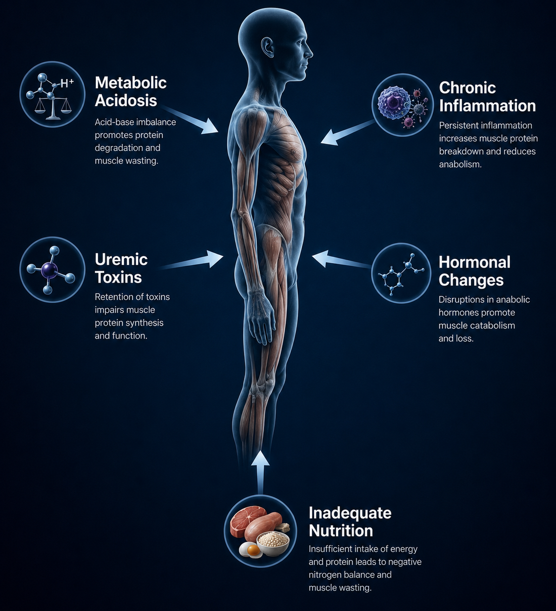
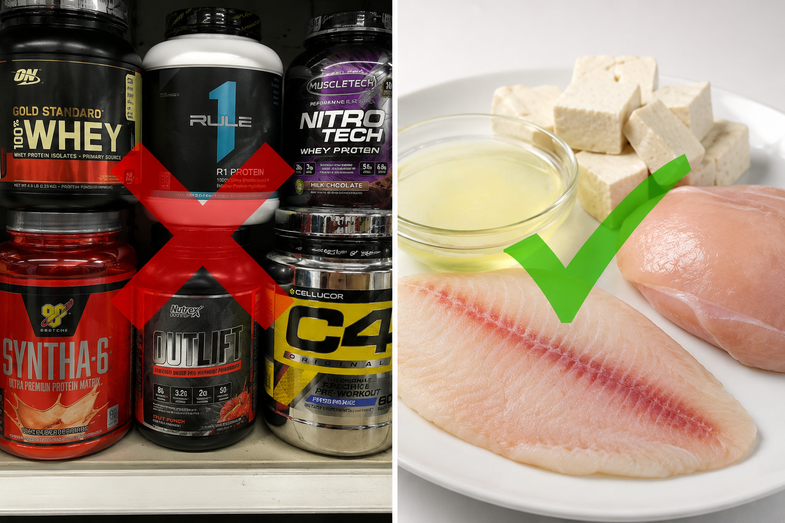
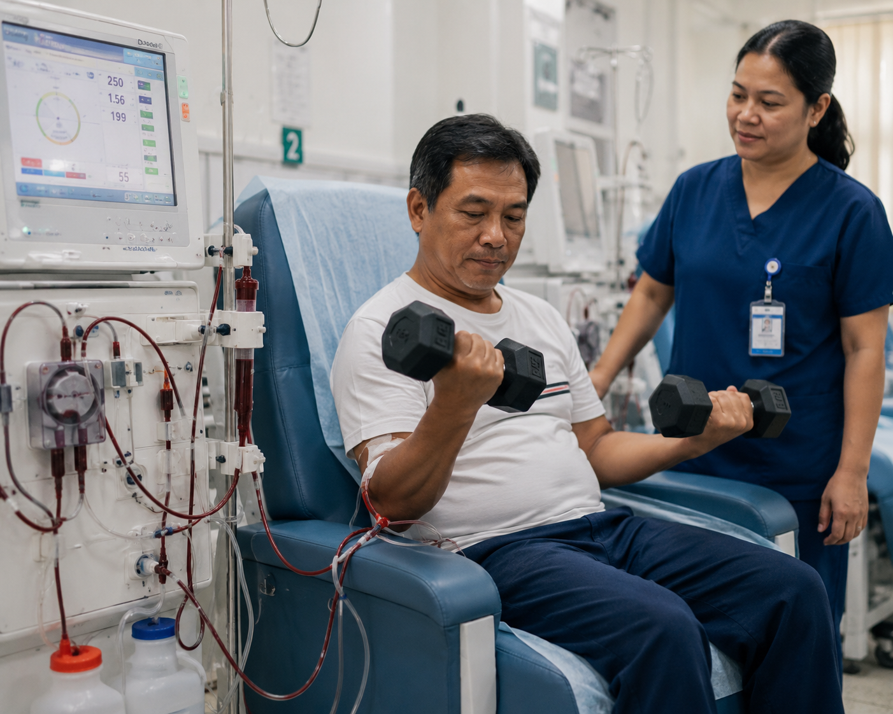
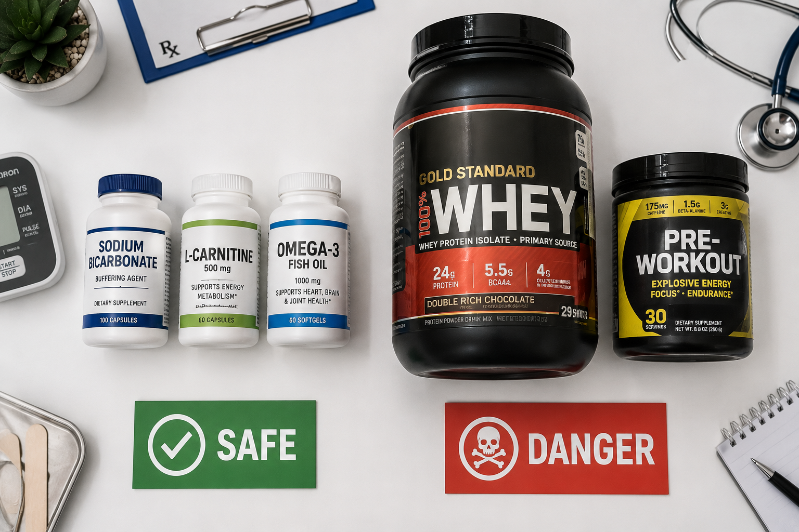
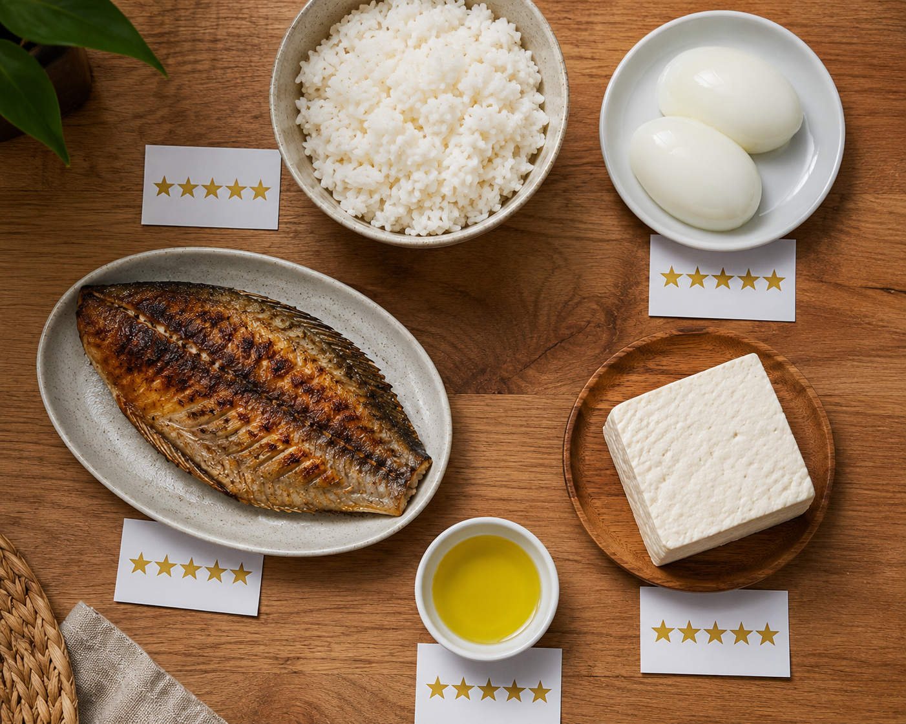

Why CKD Causes Muscle WastingBakit Nagdudulot ang CKD ng Pagkasira ng KalamnanNgano Nagdala ang CKD og Pagkawala sa KalamnanBakit Nagdudulot ing CKD ning Pagkasira ning Kalamnan
Muscle wasting in CKD is not simply from inactivity or poor eating. It is driven by five simultaneous physiological mechanisms — metabolic acidosis, chronic inflammation, uremic toxins, hormonal dysregulation, and inadequate nutrition — that together create a catabolic state no amount of gym work can overcome unless each mechanism is also treated medically. Understanding this changes how we approach muscle building in kidney disease.Ang pagkasira ng kalamnan sa CKD ay hindi lamang dahil sa kawalan ng aktibidad o mahinang pagkain. Ito ay pinapatakbo ng limang sabay-sabay na pisyolohikal na mekanismo — metabolic acidosis, talamak na pamamaga, mga uremic toxin, hormonal dysregulation, at hindi sapat na nutrisyon — na magkasamang lumilikha ng catabolic na estado na hindi maaabot ng kahit anong dami ng ehersisyo maliban kung ang bawat mekanismo ay ginagamot din nang medikal. Ang pag-unawa nito ay nagbabago ng ating pamamaraan sa pagpapalaki ng kalamnan sa sakit sa bato.Ang pagkawala sa kalamnan sa CKD dili lamang tungod sa kawad-on sa aktibidad o dautang pagkaon. Kini gipadagan sa lima ka dungan nga pisyolohikal nga mekanismo — metabolic acidosis, kronikong pamugos, mga uremic toxin, hormonal dysregulation, ug dili igo nga nutrisyon — nga magkasamang nagmugna og catabolic nga estado nga dili mapukan sa bisan pila ka trabaho sa gym gawas kung ang matag mekanismo ginambal usab medikal. Ang pagsabot niini nagbag-o sa atong pamaagi sa pagtuod sa kalamnan sa sakit sa kidney.Ing pagkasira ning kalamnan sa CKD ya ali lamang dahil king kaalan ning aktibidad o mahinaning pamangan. Ini ya pinapatakbo ning limang sabay-sabay na pisyolohikal na mekanismo — metabolic acidosis, talamak na pamamaga, deng uremic toxin, hormonal dysregulation, at ali sapat na nutrisyon — na magkasamang lumilikha ning catabolic na estado na ali maaabot ning kahit anong dami ning ehersisyo maliban nung ing bawat mekanismo ya ginagamut din nang medikal. Ing pag-unawa nini ya nagbabago ning ating pamamaraan sa pagpapalaki ning kalamnan sa sakit sa batu.

The catabolic state of CKD is multifactorial. Correcting metabolic acidosis (bicarbonate ≥22 mEq/L) is one of the most impactful interventions — it directly reduces protein catabolism through the ubiquitin-proteasome pathway.Ang catabolic na estado ng CKD ay multifactorial. Ang pagwawasto ng metabolic acidosis (bicarbonate ≥22 mEq/L) ay isa sa pinaka-epektibong interbensyon — direkta nitong binabawasan ang catabolism ng protina sa pamamagitan ng ubiquitin-proteasome pathway.Ang catabolic nga estado sa CKD multifactorial. Ang pagtama sa metabolic acidosis (bicarbonate ≥22 mEq/L) usa sa pinaka-epektibong interbensyon — direkta niini nagkunhod sa catabolism sa protina pinaagi sa ubiquitin-proteasome pathway.Ing catabolic na estado ning CKD ya multifactorial. Ing pagwawasto ning metabolic acidosis (bicarbonate ≥22 mEq/L) ya isa king pinaka-epektibong interbensyon — direkta nining binabawasan ing catabolism ning protina sa pamamagitan ning ubiquitin-proteasome pathway.
What is Protein-Energy Wasting (PEW)?Ano ang Protein-Energy Wasting (PEW)?Unsa ang Protein-Energy Wasting (PEW)?Ano ing Protein-Energy Wasting (PEW)?
PEW is the clinical syndrome of simultaneous muscle and fat wasting in CKD — defined by the International Society of Renal Nutrition and Metabolism (ISRNM) as: low serum albumin (<3.8 g/dL), low pre-albumin, low muscle mass by anthropometry or imaging, and reduced dietary intake. It affects 28–54% of CKD patients and dramatically increases cardiovascular mortality, hospitalizations, and infection risk. Sarcopenia in dialysis patients carries a 2–3× higher mortality risk.Ang PEW ay ang klinikal na sindrome ng sabay-sabay na pagkasira ng kalamnan at taba sa CKD — tinukoy ng International Society of Renal Nutrition and Metabolism (ISRNM) bilang: mababang serum albumin (<3.8 g/dL), mababang pre-albumin, mababang masa ng kalamnan sa anthropometry o imaging, at nabawasang paggagamit ng pagkain. Nakakaapekto ito sa 28–54% ng mga pasyenteng may CKD at malaki ang pagtaas ng cardiovascular mortality, mga pag-ospital, at panganib ng impeksyon. Ang sarcopenia sa mga pasyenteng naka-dialysis ay nagdadala ng 2–3× na mas mataas na panganib ng mortalidad.Ang PEW mao ang klinikal nga sindrome sa dungan nga pagkawala sa kalamnan ug taba sa CKD — gitukod sa International Society of Renal Nutrition and Metabolism (ISRNM) isip: ubos nga serum albumin (<3.8 g/dL), ubos nga pre-albumin, ubos nga masa sa kalamnan sa anthropometry o imaging, ug nabawasang paggamit sa pagkaon. Nakaapekto kini sa 28–54% sa mga pasyente nga adunay CKD ug dakong pagtaas sa cardiovascular mortality, mga pag-ospital, ug peligro sa impeksyon. Ang sarcopenia sa mga pasyente nga naka-dialysis nagdala og 2–3× nga mas taas nga peligro sa mortalidad.Ing PEW ya ing klinikal na sindrome ning sabay-sabay na pagkasira ning kalamnan at taba sa CKD — tinukoy ning International Society of Renal Nutrition and Metabolism (ISRNM) bilang: mababang serum albumin (<3.8 g/dL), mababang pre-albumin, mababang masa ning kalamnan sa anthropometry o imaging, at nabawasang paggagamit nining pamangan. Nakakaapekto ini sa 28–54% ning deng pasyenteng may CKD at malaki ing pagtaas ning cardiovascular mortality, deng pag-ospital, at panganib ning impeksyon. Ing sarcopenia sa deng pasyenteng naka-dialysis ya nagdadala ning 2–3× na mas matas a panganib ning mortalidad.
The acid-base connection — most overlookedAng koneksyon sa acid-base — pinaka-napalampasAng koneksyon sa acid-base — pinaka-gikalimtanIng koneksyon sa acid-base — pinaka-napalampas
Metabolic acidosis (serum bicarbonate <22 mEq/L) activates the ubiquitin-proteasome system — the cell's protein degradation machinery — leading to accelerated muscle breakdown. Correcting acidosis with sodium bicarbonate supplementation alone has been shown in RCTs to increase lean muscle mass. Before spending money on supplements, check your bicarbonate level with your nephrologist. Target: HCO₃ 22–26 mEq/L (KDIGO 2024).Ang metabolic acidosis (serum bicarbonate <22 mEq/L) ay nagpapagana ng ubiquitin-proteasome system — ang makinarya ng pagkasira ng protina ng selula — na humahantong sa pinabilis na pagkasira ng kalamnan. Ipinakita sa mga RCT na ang pagwawasto ng acidosis gamit ang sodium bicarbonate supplementation lamang ay nagpapataas ng lean muscle mass. Bago gumastos ng pera sa mga suplemento, suriin ang antas ng inyong bicarbonate sa inyong nephrologist. Target: HCO₃ 22–26 mEq/L (KDIGO 2024).Ang metabolic acidosis (serum bicarbonate <22 mEq/L) nagpagana sa ubiquitin-proteasome system — ang makinarya sa pagkaguba sa protina sa selula — nga nagdala sa pinahisgutan nga pagkaguba sa kalamnan. Gipakita sa mga RCT nga ang pagtama sa acidosis gamit ang sodium bicarbonate supplementation lamang nagpataas sa lean muscle mass. Sa wala pa mogasto og kwarta sa mga suplemento, susihon ang inyong lebel sa bicarbonate uban sa inyong nephrologist. Target: HCO₃ 22–26 mEq/L (KDIGO 2024).Ing metabolic acidosis (serum bicarbonate <22 mEq/L) ya nagpapagana ning ubiquitin-proteasome system — ing makinarya ning pagkasira ning protina ning selula — na humahantong sa pinabilis na pagkasira ning kalamnan. Ipinakita sa deng RCT na ing pagwawasto ning acidosis gamit ing sodium bicarbonate supplementation lamang ya nagpapataas ning lean muscle mass. Bago gumastos ning pera sa deng suplemento, suriin ing antas ning inyong bicarbonate king ka nephrologist. Target: HCO₃ 22–26 mEq/L (KDIGO 2024).
The CKD Muscle-Building ParadoxAng Paradox ng Pagpapalaki ng Kalamnan sa CKDAng Paradox sa Pagtuod sa Kalamnan sa CKDIng Paradox ning Pagpapalaki ning Kalamnan sa CKD
"Eat more protein to build muscle""Kumain ng mas maraming protina para mapalakas ang kalamnan""Mokaon og daghang protina aron matuod ang kalamnan""Kumain ning mas dacal a protina para mapalakas ing kalamnan"
In healthy athletes, high protein intake (1.6–2.2 g/kg/day) drives muscle protein synthesis. In pre-dialysis CKD Stage 3–5, high protein intake accelerates kidney progression — each gram of protein generates nitrogenous waste (urea, creatinine) that the failing kidney cannot excrete. The optimal pre-dialysis protein is 0.6–0.8 g/kg/day. Muscle gains are still possible at this level when combined with resistance exercise and acidosis correction, but expectations must be realistic.Sa mga malusog na atleta, ang mataas na paggamit ng protina (1.6–2.2 g/kg/araw) ay nagtutulak ng muscle protein synthesis. Sa pre-dialysis CKD Stage 3–5, ang mataas na paggamit ng protina ay nagpapabilis ng pagsulong ng sakit sa bato — ang bawat gramo ng protina ay naglilikha ng nitrogenous waste (urea, creatinine) na hindi maaaring ilabas ng nabigong bato. Ang optimal na pre-dialysis na protina ay 0.6–0.8 g/kg/araw. Ang mga pagtaas ng kalamnan ay posible pa rin sa antas na ito kapag pinagsama sa resistance exercise at pagwawasto ng acidosis, ngunit ang mga inaasahan ay dapat maging makatotohanan.Sa mga malusog nga atleta, ang taas nga paggamit sa protina (1.6–2.2 g/kg/adlaw) nagpadagan sa muscle protein synthesis. Sa pre-dialysis CKD Stage 3–5, ang taas nga paggamit sa protina nagpadali sa pagsulong sa sakit sa kidney — ang matag gramo sa protina nagmugna og nitrogenous waste (urea, creatinine) nga dili mabubo sa nabigong kidney. Ang optimal nga pre-dialysis nga protina mao ang 0.6–0.8 g/kg/adlaw. Ang mga pagtaas sa kalamnan posible pa sa kini nga lebel kung gihiusa sa resistance exercise ug pagtama sa acidosis, apan ang mga paglaom kinahanglan makatinuod.Sa deng malusog na atleta, ing matas a paggamit ning protina (1.6–2.2 g/kg/aldo) ya nagtutulak ning muscle protein synthesis. Sa pre-dialysis CKD Stage 3–5, ing matas a paggamit ning protina ya nagpapabilis ning pagsulong nining sakit sa batu — ing bawat gramo ning protina ya naglilikha ning nitrogenous waste (urea, creatinine) na ali maaaring ilabas ning nabigoning batu. Ing optimal na pre-dialysis na protina ya 0.6–0.8 g/kg/aldo. Deng pagtaas ning kalamnan ya posible pa rin sa antas na ini nung pinagsama sa resistance exercise at pagwawasto ning acidosis, ngarud deng inaasahan ya dapat maging makatotohanan.
"Take creatine for muscle gains""Uminom ng creatine para sa pagtaas ng kalamnan""Moinom og creatine alang sa pagtaas sa kalamnan""Uminom ning creatine para king pagtaas ning kalamnan"
Creatine supplementation is the most evidence-based supplement for muscle building in the general population. In CKD, the picture is more complex: creatine loading (20g/day) raises serum creatinine (not actual kidney function — it is a measurement artifact) and can cause false alarm in monitoring. Low-dose creatine (3–5g/day) is being studied in CKD. It is not categorically contraindicated but requires nephrologist supervision. The standard gym advice of "creatine loading" is inappropriate in CKD.Ang creatine supplementation ay ang pinaka-evidence-based na suplemento para sa pagpapalaki ng kalamnan sa pangkalahatang populasyon. Sa CKD, mas kumplikado ang larawan: ang creatine loading (20g/araw) ay nagpapataas ng serum creatinine (hindi ang aktwal na function ng bato — ito ay isang measurement artifact) at maaaring magdulot ng maling alarma sa monitoring. Ang mababang dosis ng creatine (3–5g/araw) ay pinag-aaral sa CKD. Hindi ito ganap na kontraindikado ngunit nangangailangan ng pangangasiwa ng nephrologist. Ang karaniwang payo sa gym na "creatine loading" ay hindi angkop sa CKD.Ang creatine supplementation mao ang pinaka-evidence-based nga suplemento alang sa pagtuod sa kalamnan sa kinatibuk-ang populasyon. Sa CKD, mas komplikado ang hulagway: ang creatine loading (20g/adlaw) nagpataas sa serum creatinine (dili ang aktwal nga function sa kidney — usa kini ka measurement artifact) ug mahimong hinungdan sa sayop nga alarma sa monitoring. Ang ubos nga dosis sa creatine (3–5g/adlaw) gitun-an sa CKD. Dili kini hingpit nga kontraindikado apan nanginahanglan og pagdumala sa nephrologist. Ang kasagarang payo sa gym nga "creatine loading" dili angay sa CKD.Ing creatine supplementation ya ing pinaka-evidence-based na suplemento para king pagpapalaki ning kalamnan sa pangkalahatang populasyon. Sa CKD, mas kumplikado ing laldoan: ing creatine loading (20g/aldo) ya nagpapataas ning serum creatinine (ali ing aktwal na function nining batu — ini ya metung a measurement artifact) at maaaring magdulot ning maling alarma sa moniniring. Ing mababang dosis ning creatine (3–5g/aldo) ya pinag-aaral sa CKD. Ali ini ganap na kontraindikado ngarud nangangailangan ning pangangasiwa ning nephrologist. Ing karaniwang payo sa gym na "creatine loading" ya ali angkop sa CKD.
High-protein supplements are among the most dangerous products for CKD patientsAng mga suplementong mataas sa protina ay kabilang sa pinaka-mapanganib na produkto para sa mga pasyenteng may CKDAng mga suplemento nga taas sa protina kabilang sa pinaka-mapeligro nga mga produkto alang sa mga pasyente nga adunay CKDDeng suplementong mataas sa protina ya kabilang sa pinaka-mapanganib na produkto para king deng pasyenteng may CKD
Whey protein shakes, mass gainers, and high-protein meal replacements sold at gyms and online — marketed for muscle building — are directly nephrotoxic in advanced CKD. A single serving of whey protein (25–30g protein) may exceed the entire day's protein allowance for a Stage 4–5 CKD patient. Worse: most commercial protein powders contain phosphate additives and high potassium. Multiple documented cases of CKD patients accelerating to ESKD after starting high-protein supplementation. This is not theoretical — do not self-prescribe protein supplements without nephrologist guidance.Ang mga whey protein shake, mass gainer, at high-protein meal replacement na ibinebenta sa mga gym at online — na marketed para sa pagpapalaki ng kalamnan — ay direktang nephrotoxic sa advanced CKD. Ang isang serving ng whey protein (25–30g protina) ay maaaring malagpasan ang buong araw na allowance ng protina para sa isang pasyenteng Stage 4–5 CKD. Mas masama: karamihan sa mga komersyal na protein powder ay naglalaman ng mga phosphate additive at mataas na potassium. Maraming dokumentadong kaso ng mga pasyenteng may CKD na nagmamadali sa ESKD pagkatapos magsimula ng high-protein supplementation. Hindi ito teoretikal — huwag mag-self-prescribe ng mga protein supplement nang walang gabay ng nephrologist.Ang mga whey protein shake, mass gainer, ug high-protein meal replacement nga gibaligya sa mga gym ug online — nga gi-market alang sa pagtuod sa kalamnan — direkta nga nephrotoxic sa advanced CKD. Ang usa ka serving sa whey protein (25–30g protina) mahimong molapas sa tibuok adlaw nga allowance sa protina alang sa usa ka pasyente nga Stage 4–5 CKD. Mas grabe: kadaghanan sa mga komersyal nga protein powder adunay mga phosphate additive ug taas nga potassium. Daghan nga dokumentadong kaso sa mga pasyente nga adunay CKD nga nagpadali sa ESKD pagkahuman sa pagsugod sa high-protein supplementation. Dili kini teorya — ayaw mag-self-prescribe og mga protein supplement nga walay giya sa nephrologist.Deng whey protein shake, mass gainer, at high-protein meal replacement na ibinebenta sa deng gym at online — na marketed para king pagpapalaki ning kalamnan — ya direktang nephrotoxic sa advanced CKD. Ing metung a serving ning whey protein (25–30g protina) ya maaaring malagpasan ing buoning aldo na allowance ning protina para king metung a pasyenteng Stage 4–5 CKD. Mas masama: karamihan sa deng komersyal na protein powder ya naglalaman ning deng phosphate additive at matas a potassium. Maraming dokumentadong kaso ning deng pasyenteng may CKD na nagmamadali sa ESKD kapabanuan magsimula ning high-protein supplementation. Ali ini teoretikal — eka mag-self-prescribe ning deng protein supplement nang alang gabay ning nephrologist.

Pre-dialysis CKD requires protein restriction to 0.6–0.8 g/kg/day — less than half the bodybuilder recommendation. Dialysis patients paradoxically need MORE protein (1.2–1.4 g/kg/day) because dialysis removes amino acids. The prescription depends entirely on your CKD stage.Ang pre-dialysis CKD ay nangangailangan ng pagbabawas ng protina sa 0.6–0.8 g/kg/araw — mas mababa sa kalahati ng rekomendasyon para sa bodybuilder. Ang mga pasyenteng naka-dialysis ay paradoxically nangangailangan ng HIGIT na protina (1.2–1.4 g/kg/araw) dahil inaalis ng dialysis ang mga amino acid. Ang reseta ay ganap na nakasalalay sa inyong yugto ng CKD.Ang pre-dialysis CKD nagkinahanglan og pagkunhod sa protina ngadto sa 0.6–0.8 g/kg/adlaw — mas ubos sa katunga sa rekomendasyon para sa bodybuilder. Ang mga pasyente nga naka-dialysis paradoxically nagkinahanglan og DUGANG nga protina (1.2–1.4 g/kg/adlaw) tungod ang dialysis naglabas sa mga amino acid. Ang reseta hingpit nga nagsalalay sa imong yugto sa CKD.Ing pre-dialysis CKD ya nangangailangan ning pagbabawas ning protina sa 0.6–0.8 g/kg/aldo — mas mababa sa kalahati ning rekomendasyon para king bodybuilder. Deng pasyenteng naka-dialysis ya paradoxically nangangailangan ning HIGIT na protina (1.2–1.4 g/kg/aldo) dahil inaalis ning dialysis deng amino acid. Ing reseta ya ganap na nakasalalay king ka yugto ning CKD.
Safe Resistance Training by CKD StageLigtas na Resistance Training ayon sa CKD StageLuwas nga Resistance Training sumala sa CKD StageLigtas na Resistance Training ayon sa CKD Stage

Intradialytic exercise (during dialysis) is safe and increasingly recommended — resistance bands and light weights can be used during sessions. The dialysis period represents an opportunity for supervised exercise when the patient is already attended by staff.Ang intradialytic exercise (sa panahon ng dialysis) ay ligtas at lalong inirerekomenda — ang mga resistance band at magaan na timbang ay maaaring gamitin sa panahon ng mga sesyon. Ang panahon ng dialysis ay isang pagkakataon para sa supervised na ehersisyo kapag ang pasyente ay naalagaan na ng mga tauhan.Ang intradialytic exercise (sa panahon sa dialysis) luwas ug nagkadako ang rekomendasyon — ang mga resistance band ug magaan nga timbang mahimong gamiton sa panahon sa mga sesyon. Ang panahon sa dialysis nagrepresentar og oportunidad alang sa supervised nga ehersisyo kon ang pasyente gihapon atimanan sa mga tauhan.Ing intradialytic exercise (sa panahon ning dialysis) ya ligtas at lalong inirerekomenda — deng resistance band at magaan na timbang ya maaaring gamitin sa panahon ning deng sesyon. Ing panahon ning dialysis ya metung a pagkakabanua para king supervised na ehersisyo nung ing pasyente ya naalagaan na ning deng tauhan.
Resistance exercise is the most potent non-pharmacological intervention for muscle preservation in CKD. Even modest loads (40–60% of 1-rep maximum) produce meaningful muscle protein synthesis when performed consistently. The key is appropriate intensity and contraindication awareness.Ang resistance exercise ay ang pinaka-makapangyarihang non-pharmacological na interbensyon para sa pagpapanatili ng kalamnan sa CKD. Kahit ang katamtamang bigat (40–60% ng 1-rep maximum) ay nagpo-produce ng makabuluhang muscle protein synthesis kapag ginawa nang pare-pareho. Ang susi ay ang angkop na intensity at kamalayan sa kontraindikasyon.Ang resistance exercise mao ang pinaka-gamhanan nga non-pharmacological nga interbensyon alang sa pagpreserba sa kalamnan sa CKD. Bisan ang katamtamang karga (40–60% sa 1-rep maximum) nagmugna og makasasayod nga muscle protein synthesis kung buhaton nang kanunay. Ang yawe mao ang angay nga intensity ug kahibalo sa mga kontraindikasyon.Ing resistance exercise ya ing pinaka-makapangyarihang non-pharmacological na interbensyon para king pagpapanatili ning kalamnan sa CKD. Kahit ing katamtamang bigat (40–60% ning 1-rep maximum) ya nagpo-produce ning makabuluhang muscle protein synthesis nung ginawa nang pare-pareho. Ing susi ya ing angkop na intensity at kamalayan sa kontraindikasyon.
| Stage | Resistance Training | Frequency | Key Precautions |
|---|---|---|---|
| Stage 1–2 | Standard progressive resistance training permitted. Can follow general gym programming with minor modifications. Focus on compound movements (squats, deadlifts, rows, presses). | 3–4×/week | Avoid NSAIDs for muscle soreness (use paracetamol). Monitor BP before and after sessions. Ensure hydration (no restriction at this stage). |
| Stage 3–4 | Moderate resistance training recommended. Start with 40–60% 1RM. Include both machine and bodyweight exercises. Prioritize lower body (leg press, seated leg extension, calf raises) — largest muscle groups, greatest functional benefit. | 2–3×/week, non-consecutive days | BP must be <160/100 before exercise. Avoid heavy Valsalva (breath-holding during heavy lifts). AV fistula arm — no heavy resistance on fistula arm. Monitor fluid status — restrict fluid with exercise in CKD Stage 4. |
| Dialysis (HD) | Intradialytic exercise (exercise during dialysis session) is the most studied and effective approach. Low-to-moderate resistance using ankle weights, resistance bands, or leg presses during the first 2 hours of HD. Avoid exercise in the last hour (hypotension risk). Post-HD session: rest first, light walking or stretching only. | 3×/week (during HD sessions) + 2×/week home exercise | Never exercise the AV fistula arm with resistance. Do not exercise within 30 min of eating. BP monitoring before, midway, after. Stop immediately if: chest pain, severe breathlessness, BP drop >20 mmHg, dizziness. |
| Dialysis (PD) | Can exercise with the abdomen drained of PD fluid (between exchanges). Avoid exercises increasing intra-abdominal pressure (heavy squats, sit-ups) with fluid in abdomen — hernia risk. Swimming is permitted but requires catheter exit-site protection. | 3–5×/week | Exercise during dwell phase (fluid in abdomen) is generally discouraged for resistance exercises. Aerobic exercise during dwell is acceptable. Catheter exit-site must remain dry during swimming. |
| Post-Transplant | Weeks 0–6: walking only. Weeks 6–12: light resistance bands, progressive walking. After 3 months (with clearance): progressive resistance training. Target: rebuild to pre-dialysis fitness level over 6–12 months. Immunosuppression (steroids) accelerates muscle wasting — resistance exercise is critical. | Start 3×/week light, build to 4–5×/week over 6 months | No contact sports for 6 months. Avoid abdominal trauma (graft is in the iliac fossa). Cyclosporine causes gingival overgrowth and may cause muscle cramps. Tacrolimus causes tremor — modify grip exercises accordingly. |
Get pre-exercise cardiovascular clearanceKumuha ng cardiovascular clearance bago mag-ehersisyoMakakuha og cardiovascular clearance sa wala pa mag-exerciseKumuha ning cardiovascular clearance bago mag-ehersisyo
CKD patients have 10–20× higher cardiovascular event risk than the general population. Before starting any resistance training program, obtain ECG, echocardiogram if symptomatic, and nephrologist clearance. A Bruce protocol or 6-minute walk test can establish your functional baseline. This is not a barrier to exercise — it is basic safety. Most patients are cleared with minimal restrictions.Ang mga pasyenteng may CKD ay may 10–20× na mas mataas na panganib ng cardiovascular event kaysa sa pangkalahatang populasyon. Bago magsimula ng anumang resistance training program, kumuha ng ECG, echocardiogram kung may sintomas, at clearance ng nephrologist. Ang Bruce protocol o 6-minute walk test ay makakapagtatag ng inyong functional baseline. Hindi ito hadlang sa ehersisyo — ito ay pangunahing kaligtasan. Karamihan sa mga pasyente ay na-clear na may minimal na mga paghihigpit.Ang mga pasyente nga adunay CKD adunay 10–20× nga mas taas nga peligro sa cardiovascular event kay sa kinatibuk-ang populasyon. Sa wala pa magsugod sa bisan unsang resistance training program, makakuha og ECG, echocardiogram kung adunay sintomas, ug clearance sa nephrologist. Ang Bruce protocol o 6-minute walk test makaestablisar sa inyong functional baseline. Dili kini babag sa exercise — kini sukaranan nga kaluwasan. Kadaghanan sa mga pasyente gi-clear nga adunay minimal nga mga pagdili.Deng pasyenteng may CKD ya may 10–20× na mas matas a panganib ning cardiovascular event kaysa sa pangkalahatang populasyon. Bago magsimula ning anumang resistance training program, kumuha ning ECG, echocardiogram nung may sintomas, at clearance ning nephrologist. Ing Bruce protocol o 6-minute walk test ya makanungtatag ning inyong functional baseline. Ali ini hadlang sa ehersisyo — ini ya pangunahing kaligtasan. Karamihan sa deng pasyente ya na-clear na may minimal na deng paghihigpit.
Protein Strategy for Muscle Building in CKDEstratehiya sa Protina para sa Pagpapalaki ng Kalamnan sa CKDEstratehiya sa Protina alang sa Pagtuod sa Kalamnan sa CKDEstratehiya sa Protina para king Pagpapalaki ning Kalamnan sa CKD
The goal is to maximize muscle protein synthesis within your protein allowance — using high biological value proteins timed around exercise.Ang layunin ay i-maximize ang muscle protein synthesis sa loob ng inyong allowance ng protina — gamit ang mga protina na may mataas na biological value na nakatimed sa paligid ng ehersisyo.Ang tumong mao ang pag-maximize sa muscle protein synthesis sulod sa inyong allowance sa protina — gamit ang mga protina nga adunay taas nga biological value nga gi-time sa palibot sa exercise.Ing layunin ya i-maximize ing muscle protein synthesis sa loob ning inyong allowance ning protina — gamit deng protina na may matas a biological value na nakatimed sa paligid ning ehersisyo.
Protein quality matters more than quantityAng kalidad ng protina ay mas mahalaga kaysa sa damiAng kalidad sa protina mas importante kay sa damiIng kalidad ning protina ya mas mahalaga kaysa sa dami
High Biological Value (HBV) proteins contain all essential amino acids in proportions matching human muscle. For pre-dialysis CKD patients with limited protein allowance, every gram must count — prioritize egg whites, fish (labahita, tilapia), chicken breast, lean pork over plant proteins which have incomplete amino acid profiles and higher phosphorus per gram of protein.Ang mga High Biological Value (HBV) na protina ay naglalaman ng lahat ng mahahalagang amino acid sa mga proporsiyon na tumutugma sa kalamnan ng tao. Para sa mga pre-dialysis CKD pasyente na may limitadong allowance ng protina, ang bawat gramo ay dapat may halaga — unahin ang egg whites, isda (labahita, tilapia), dibdib ng manok, lean pork kaysa sa mga plant protein na may hindi kumpletong amino acid profile at mas mataas na phosphorus bawat gramo ng protina.Ang mga High Biological Value (HBV) nga protina adunay tanan nga mahahalagang amino acid sa mga proporsyon nga katumbas sa kalamnan sa tawo. Alang sa mga pre-dialysis CKD pasyente nga adunay limitadong allowance sa protina, ang matag gramo kinahanglan may bili — unahon ang egg whites, isda (labahita, tilapia), dughan sa manok, lean pork labaw sa mga plant protein nga adunay dili kompleto nga amino acid profile ug mas taas nga phosphorus matag gramo sa protina.Deng High Biological Value (HBV) na protina ya naglalaman ning lahat ning mahahalagang amino acid sa deng proporsiyun na tumutugma sa kalamnan ning tao. Para king deng pre-dialysis CKD pasyente na may limitadong allowance ning protina, ang bawat gramo ya dapat may halaga — unahin ing egg whites, isda (labahita, tilapia), dibdib ning manok, lean pork kaysa sa deng plant protein na may ali kumpletong amino acid profile at mas matas a phosphorus bawat gramo ning protina.
Timing: 20–30g within 2 hours post-exerciseTiming: 20–30g sa loob ng 2 oras pagkatapos ng ehersisyoTiming: 20–30g sulod sa 2 oras pagkahuman sa exerciseTiming: 20–30g sa loob ning 2 oras kapabanuan ning ehersisyo
The post-exercise anabolic window is real and more important in CKD where anabolic signaling is blunted. Consuming your largest protein portion within 2 hours of resistance exercise maximizes the muscle protein synthesis response. For dialysis patients: post-dialysis is also an anabolic opportunity — consume protein within 30–60 minutes of completing dialysis.Ang post-exercise anabolic window ay totoo at mas mahalaga sa CKD kung saan ang anabolic signaling ay pinababa. Ang pagkain ng pinakamalalaking bahagi ng protina sa loob ng 2 oras ng resistance exercise ay nag-maximize ng muscle protein synthesis response. Para sa mga pasyenteng naka-dialysis: ang post-dialysis ay isang anabolic opportunity din — kumain ng protina sa loob ng 30–60 minuto pagkatapos ng dialysis.Ang post-exercise anabolic window tinuod ug mas importante sa CKD diin ang anabolic signaling gipakunhod. Ang pagkaon sa pinakadakilang bahin sa protina sulod sa 2 oras sa resistance exercise nag-maximize sa muscle protein synthesis response. Alang sa mga pasyente nga naka-dialysis: ang post-dialysis usa usab ka anabolic opportunity — mokaon og protina sulod sa 30–60 minuto pagkahuman sa dialysis.Ing post-exercise anabolic window ya totoo at mas mahalaga sa CKD nung saan ing anabolic signaling ya pinababa. Ining pamangan ning pinakamalalaking bahagi ning protina sa loob ning 2 oras ning resistance exercise ya nag-maximize ning muscle protein synthesis response. Para king deng pasyenteng naka-dialysis: ing post-dialysis ya metung a anabolic opportunity din — kumain ning protina sa loob ning 30–60 minuto kapabanuan ning dialysis.
Distribute evenly — avoid large single dosesIpamahagi nang pantay-pantay — iwasan ang malalaking solong dosisIpang-apod nang managsama — likayi ang dagko nga solong dosisIpamahagi nang pantay-pantay — iwasan ing malalaking solong dosis
The kidney clears nitrogenous waste continuously. A single large protein meal (60g) generates a surge of urea and acids. Distribute protein across 4–5 small meals: breakfast (10–15g), lunch (15–20g), post-workout (15–20g), dinner (15–20g). This reduces peak uremic load while maintaining total daily intake — especially important pre-dialysis.Ang bato ay patuloy na nag-aalis ng nitrogenous waste. Ang isang malaking kain ng protina (60g) ay naglilikha ng pagsabog ng urea at mga acid. Ipamahagi ang protina sa 4–5 maliit na kain: almusal (10–15g), tanghalian (15–20g), post-workout (15–20g), hapunan (15–20g). Binabawasan nito ang peak uremic load habang pinapanatili ang kabuuang pang-araw-araw na paggamit — lalo na mahalaga bago ang dialysis.Ang kidney naghinlo sa nitrogenous waste nang kanunay. Ang usa ka dakong pagkaon sa protina (60g) nagmugna og pagtaas sa urea ug mga acid. Ipang-apod ang protina sa 4–5 ka gamay nga pagkaon: pamahaw (10–15g), paniudto (15–20g), post-workout (15–20g), panihapon (15–20g). Kini nagkunhod sa peak uremic load samtang gipadayon ang kinatibuk-ang pang-adlaw-adlaw nga paggamit — labi na importante sa wala pa ang dialysis.Ining batu ya patuloy na nag-aalis ning nitrogenous waste. Ing metung a malda a kain ning protina (60g) ya naglilikha ning pagsabog ning urea at deng acid. Ipamahagi ing protina sa 4–5 maliit na kain: almusal (10–15g), tanghalian (15–20g), post-workout (15–20g), hapunan (15–20g). Binabawasan nini ing peak uremic load habang pinapanatili ing kabuuang pang-aldo-aldo na paggamit — lalo na mahalaga bago ing dialysis.
Best protein sources for CKD muscle building — Filipino contextPinakamahusay na Pinagkukunan ng Protina para sa Pagpapalaki ng Kalamnan sa CKD — Filipino na KontekstoPinakamaayo nga Tinubdan sa Protina alang sa Pagtuod sa Kalamnan sa CKD — Filipino nga KontekstoPinakamahusay na Pinagkukunan ning Protina para king Pagpapalaki ning Kalamnan sa CKD — Filipino na Konteksto
| Food | Protein per 100g | K⁺ | Phos | CKD Rating |
|---|---|---|---|---|
| Egg white (itlog puti) | 11g | Very low | Very low | ★★★★★ Best choice |
| Tilapia (steamed/grilled) | 26g | Low | Moderate | ★★★★☆ Excellent |
| Labahita (surgeonfish) | 22g | Low | Moderate | ★★★★☆ Excellent |
| Chicken breast (no skin) | 31g | Low-moderate | Moderate | ★★★★☆ Excellent |
| Pork tenderloin (lean) | 29g | Low | Moderate | ★★★☆☆ Good |
| Whole egg (itlog) | 13g | Low | Moderate (yolk) | ★★★☆☆ Limit to 1/day (yolk) |
| Tofu (tokwa, firm) | 8g | Low | Low-moderate | ★★★☆☆ Good for variety |
| Tuna (canned in water) | 25g | Moderate | High | ★★☆☆☆ Limit — high phos |
| Monggo / legumes | 9g (cooked) | High | High | ★☆☆☆☆ Avoid in Stage 4–5 |
| Whey protein powder | 25g/scoop | Variable | Very high | ⚠ CKD Stage 3+ — avoid without Rx |
Supplements with Evidence in CKD — Safety GradedMga Suplementong may Ebidensya sa CKD — May Gradong KaligtasanMga Suplemento nga adunay Ebidensya sa CKD — Grado sa KaluwasanDeng Suplementong may Ebidensya sa CKD — May Gradong Kaligtasan

Most commercial muscle-building supplements are unsafe in CKD due to high protein loads, phosphate additives, or potassium content. The few with potential benefit (BCAA, HMB, creatine at low dose) all require nephrologist approval before use.Ang karamihan sa mga komersyal na suplemento para sa pagpapalaki ng kalamnan ay hindi ligtas sa CKD dahil sa mataas na protina, mga phosphate additive, o nilalaman ng potassium. Ang iilan na may potensyal na benepisyo (BCAA, HMB, creatine sa mababang dosis) ay lahat ay nangangailangan ng pahintulot ng nephrologist bago gamitin.Kadaghanan sa mga komersyal nga suplemento alang sa pagtuod sa kalamnan dili luwas sa CKD tungod sa taas nga protina, mga phosphate additive, o nilalaman sa potassium. Ang pipila nga adunay potensyal nga benepisyo (BCAA, HMB, creatine sa ubos nga dosis) tanan nagkinahanglan og pagtugot sa nephrologist sa wala pa gamiton.Ing karamihan sa deng komersyal na suplemento para king pagpapalaki ning kalamnan ya ali ligtas sa CKD dahil king matas a protina, deng phosphate additive, o nilalaman ning potassium. Ing iilan na may potensyal na benepisyo (BCAA, HMB, creatine sa mababang dosis) ya lahat ya nangangailangan ning pahintulot ning nephrologist bago gamitin.
Each supplement below has been evaluated specifically in CKD populations. The ratings reflect both efficacy evidence and safety in the context of reduced kidney function, electrolyte sensitivity, and drug interactions with common CKD medications.Ang bawat suplemento sa ibaba ay tinasa nang espesipiko sa mga populasyong may CKD. Ang mga rating ay sumasalamin sa parehong ebidensya ng kahusayan at kaligtasan sa konteksto ng nabawasang function ng bato, sensitivity sa electrolyte, at mga pakikipag-ugnayan ng gamot sa mga karaniwang gamot sa CKD.Ang matag suplemento sa ubos gitasa nang espesipiko sa mga populasyon nga adunay CKD. Ang mga rating nagpakita sa parehong ebidensya sa kahusayan ug kaluwasan sa konteksto sa nabawasang function sa kidney, sensitivity sa electrolyte, ug mga pakig-ugnayan sa tambal sa kasagarang mga tambal sa CKD.Ing bawat suplemento sa ibaba ya tinasa nang espesipiko sa deng populasyong may CKD. Deng rating ya sumasalamin sa parehong ebidensya ning kahusayan at kaligtasan sa konteksto ning nabawasang function nining batu, sensitivity sa electrolyte, at deng pakikipag-ugnayan nining gamut sa deng karaniwaning gamut sa CKD.
Why it works:Bakit ito gumagana:Ngano kini molihok:Bakit ini gumagana: Corrects metabolic acidosis (the single biggest driver of muscle protein catabolism in CKD). Multiple RCTs demonstrate that bicarbonate supplementation increases lean muscle mass, improves albumin, and slows CKD progression independently. A 2009 RCT (de Brito-Ashurst) showed 5.9× slower eGFR decline and significant lean body mass gain in CKD patients randomized to bicarbonate vs. control.Iwinawasto ang metabolic acidosis (ang pinakamalakas na driver ng muscle protein catabolism sa CKD). Maraming RCT ang nagpapakita na ang bicarbonate supplementation ay nagpapataas ng lean muscle mass, nagpapabuti ng albumin, at nagpapabagal ng pagsulong ng CKD nang nakapag-iisa. Ang isang 2009 RCT (de Brito-Ashurst) ay nagpakita ng 5.9× na mas mabagal na pagbaba ng eGFR at makabuluhang pagtaas ng lean body mass sa mga pasyenteng may CKD na randomized sa bicarbonate kumpara sa control.Nagtama sa metabolic acidosis (ang pinakadakong driver sa muscle protein catabolism sa CKD). Daghan nga RCT nagpakita nga ang bicarbonate supplementation nagpataas sa lean muscle mass, nagpabuti sa albumin, ug nagpahunong sa pagsulong sa CKD nang nagsugod. Ang usa ka 2009 RCT (de Brito-Ashurst) nagpakita og 5.9× nga mas hinay nga pagkunhod sa eGFR ug makasasayod nga pagtaas sa lean body mass sa mga pasyente nga adunay CKD nga gi-randomize sa bicarbonate kumpara sa control.Iwinawasto ing metabolic acidosis (ang pinakamalakas na driver ning muscle protein catabolism sa CKD). Maraming RCT ing nagpapakita na ing bicarbonate supplementation ya nagpapataas ning lean muscle mass, nagpapabuti ning albumin, at nagpapabagal ning pagsulong ning CKD nang nanung-iisa. Ing metung a 2009 RCT (de Brini-Ashurst) ya nagpakita ning 5.9× na mas mabagal na pagbaba ning eGFR at makabuluhang pagtaas ning lean body mass sa deng pasyenteng may CKD na randomized sa bicarbonate kumpara king control.
In practice:Sa praktika:Sa praktis:Sa praktika: Prescribed by your nephrologist when serum HCO₃ <22 mEq/L. Available as pharmacy sodium bicarbonate tablets or dissolving powder. Not the same as drinking baking soda water — dosing must be guided by serum bicarbonate monitoring. Target HCO₃ 22–26 mEq/L.Inireseta ng inyong nephrologist kapag ang serum HCO₃ <22 mEq/L. Available bilang sodium bicarbonate tablet o dissolving powder sa parmasya. Hindi katulad ng pag-inom ng baking soda water — ang dosis ay dapat gabayan ng pagsubaybay sa serum bicarbonate. Target HCO₃ 22–26 mEq/L.Giresetahan sa inyong nephrologist kung ang serum HCO₃ <22 mEq/L. Available isip sodium bicarbonate tablet o dissolving powder sa parmasya. Dili sama sa pag-inum og baking soda water — ang dosis kinahanglan gabayan sa pagmonitor sa serum bicarbonate. Target HCO₃ 22–26 mEq/L.Inireseta ning inyong nephrologist nung ing serum HCO₃ <22 mEq/L. Available bilang sodium bicarbonate tablet o dissolving powder sa parmasya. Ali katulad ning pag-inom ning baking soda water — ing dosis ya dapat gabayan ning pagsubaybay sa serum bicarbonate. Target HCO₃ 22–26 mEq/L.
Why it works:Bakit ito gumagana:Ngano kini molihok:Bakit ini gumagana: Carnitine transports long-chain fatty acids into mitochondria for energy production in muscle. The kidney synthesizes and reabsorbs carnitine — dialysis removes it every session. Carnitine deficiency in HD patients causes muscle weakness, muscle cramps, fatigue, and impaired exercise capacity. Supplementation improves intradialytic hypotension, muscle cramps, exercise capacity, and lean muscle mass in RCTs.Ang carnitine ay nagdadala ng mga long-chain fatty acid sa mitochondria para sa produksyon ng enerhiya sa kalamnan. Ang bato ay nagsisintesis at nag-reabsorb ng carnitine — inaalis ito ng dialysis sa bawat session. Ang carnitine deficiency sa mga pasyenteng HD ay nagdudulot ng kahinaan ng kalamnan, cramps sa kalamnan, pagod, at kapansanan sa kakayahang mag-ehersisyo. Ang supplementation ay nagpapabuti ng intradialytic hypotension, muscle cramps, kakayahang mag-ehersisyo, at lean muscle mass sa mga RCT.Ang carnitine nagdala sa mga long-chain fatty acid sa mitochondria alang sa produksyon sa enerhiya sa kalamnan. Ang kidney nagsintesis ug nag-reabsorb sa carnitine — giwagtang kini sa dialysis sa matag session. Ang carnitine deficiency sa mga pasyente nga HD nagdala og kahuyang sa kalamnan, cramps sa kalamnan, kapoy, ug kapansanan sa kakayahan sa exercise. Ang supplementation nagpabuti sa intradialytic hypotension, muscle cramps, kakayahan sa exercise, ug lean muscle mass sa mga RCT.Ing carnitine ya nagdadala ning deng long-chain fatty acid sa minichondria para king produksyon ning enerhiya sa kalamnan. Ining batu ya nagsisintesis at nag-reabsorb ning carnitine — inaalis ini ning dialysis king bawat session. Ing carnitine deficiency sa deng pasyenteng HD ya nagdudulot ning kahinaan ning kalamnan, cramps sa kalamnan, pagod, at kapansanan sa kakayahang mag-ehersisyo. Ing supplementation ya nagpapabuti ning intradialytic hypotension, muscle cramps, kakayahang mag-ehersisyo, at lean muscle mass sa deng RCT.
In practice:Sa praktika:Sa praktis:Sa praktika: IV levocarnitine given post-dialysis (1g IV 3×/week) is the most effective route — direct systemic delivery. Oral carnitine (500mg–2g/day) is absorbed but much less efficiently. Local brand: L-Carnitine tablets and oral solution are available at major pharmacies. Discuss with your nephrologist — it is not routinely prescribed but is appropriate when carnitine deficiency symptoms are present.Ang IV levocarnitine na ibinibigay pagkatapos ng dialysis (1g IV 3×/linggo) ang pinaka-epektibong ruta — direktang systemic delivery. Ang oral carnitine (500mg–2g/araw) ay nasisipsip ngunit mas hindi epektibo. Local brand: Ang mga L-Carnitine tablet at oral solution ay available sa mga pangunahing parmasya. Talakayin sa inyong nephrologist — hindi ito karaniwang inireseta ngunit angkop kapag may mga sintomas ng carnitine deficiency.Ang IV levocarnitine nga gihatag pagkahuman sa dialysis (1g IV 3×/semana) mao ang pinaka-epektibong ruta — direktang systemic delivery. Ang oral carnitine (500mg–2g/adlaw) nasuyop apan dili kaayo epektibo. Local brand: Ang mga L-Carnitine tablet ug oral solution available sa mga dakong parmasya. Hisgutan sa inyong nephrologist — dili kini kasagaran giresetahan apan angay kung adunay mga sintomas sa carnitine deficiency.Ing IV levocarnitine na ibinibigay kapabanuan ning dialysis (1g IV 3×/lutu) ing pinaka-epektibong ruta — direktang systemic delivery. Ing oral carnitine (500mg–2g/aldo) ya nasisipsip ngarud mas ali epektibo. Local brand: Deng L-Carnitine tablet at oral solution ya available sa deng pangunahing parmasya. Talakayin king ka nephrologist — ali ini karaniwang inireseta ngarud angkop nung may deng sintomas ning carnitine deficiency.
Why it works:Bakit ito gumagana:Ngano kini molihok:Bakit ini gumagana: EPA (eicosapentaenoic acid) directly inhibits the muscle-wasting ubiquitin-proteasome pathway by reducing NF-κB signaling. In CKD, where chronic inflammation drives PEW, omega-3 supplementation attenuates the inflammatory cascade, preserves muscle mass, and improves response to resistance exercise. Additional benefits: reduces triglycerides (highly elevated in CKD), slows IgA nephropathy progression at 4g/day, reduces cardiovascular risk.Ang EPA (eicosapentaenoic acid) ay direktang pinipigilan ang ubiquitin-proteasome pathway na nagpapasira ng kalamnan sa pamamagitan ng pagbabawas ng NF-κB signaling. Sa CKD, kung saan ang talamak na pamamaga ay nagtutulak ng PEW, ang omega-3 supplementation ay nagpapahina ng inflammatory cascade, nagpapanatili ng masa ng kalamnan, at nagpapabuti ng tugon sa resistance exercise. Karagdagang benepisyo: nagbabawas ng triglyceride (mataas sa CKD), nagpapabagal ng pagsulong ng IgA nephropathy sa 4g/araw, nagbabawas ng cardiovascular risk.Ang EPA (eicosapentaenoic acid) direkta nga nagpugong sa ubiquitin-proteasome pathway nga nagpasira sa kalamnan pinaagi sa pagkunhod sa NF-κB signaling. Sa CKD, diin ang kronikong pamugos nagpadagan sa PEW, ang omega-3 supplementation nagpaluya sa inflammatory cascade, nagpreserba sa masa sa kalamnan, ug nagpabuti sa tubag sa resistance exercise. Dugang nga benepisyo: nagkunhod sa triglyceride (taas sa CKD), nagpahunong sa pagsulong sa IgA nephropathy sa 4g/adlaw, nagkunhod sa cardiovascular risk.Ing EPA (eicosapentaenoic acid) ya direktang pinipigilan ing ubiquitin-proteasome pathway na nagpapasira ning kalamnan sa pamamagitan ning pagbabawas ning NF-κB signaling. Sa CKD, nung saan ing talamak na pamamaga ya nagtutulak ning PEW, ing omega-3 supplementation ya nagpapahina ning inflammatory cascade, nagpapanatili ning masa ning kalamnan, at nagpapabuti ning tugon sa resistance exercise. Karagdagang benepisyo: nagbabawas ning triglyceride (mataas sa CKD), nagpapabagal ning pagsulong ning IgA nephropathy sa 4g/aldo, nagbabawas ning cardiovascular risk.
In practice:Sa praktika:Sa praktis:Sa praktika: Omacor (omega-3-acid ethyl esters 1g capsule, containing EPA 465mg + DHA 375mg) is FDA-Philippines registered and available locally. Do not use Vascepa (icosapentaenoic acid) — not FDA-PH registered. Standard dose: 2–4 capsules/day. Take with meals to reduce GI side effects. Monitor LFTs in patients with hepatic impairment. Safe in all CKD stages.Ang Omacor (omega-3-acid ethyl esters 1g capsule, naglalaman ng EPA 465mg + DHA 375mg) ay nakarehistrong FDA-Philippines at available sa lokal. Huwag gumamit ng Vascepa (icosapentaenoic acid) — hindi nakarehistrong FDA-PH. Karaniwang dosis: 2–4 capsule/araw. Inumin kasabay ng pagkain para mabawasan ang GI side effect. Subaybayan ang LFT sa mga pasyenteng may hepatic impairment. Ligtas sa lahat ng CKD stage.Ang Omacor (omega-3-acid ethyl esters 1g capsule, adunay EPA 465mg + DHA 375mg) nakarehistrong FDA-Philippines ug available sa lokal. Ayaw gamiton ang Vascepa (icosapentaenoic acid) — dili nakarehistrong FDA-PH. Karaniwang dosis: 2–4 capsule/adlaw. Inumon uban sa pagkaon aron makunhod ang GI side effect. I-monitor ang LFT sa mga pasyente nga adunay hepatic impairment. Luwas sa tanan nga CKD stage.Ing Omacor (omega-3-acid ethyl esters 1g capsule, naglalaman ning EPA 465mg + DHA 375mg) ya nakarehistrong FDA-Philippines at available sa lokal. Eka gumamit ning Vascepa (icosapentaenoic acid) — ali nakarehistrong FDA-PH. Karaniwang dosis: 2–4 capsule/aldo. Inumin kasabay nining pamangan para mabawasan ing GI side effect. Subaybayan ing LFT sa deng pasyenteng may hepatic impairment. Ligtas king amin ning CKD stage.
Why it works:Bakit ito gumagana:Ngano kini molihok:Bakit ini gumagana: HMB is a metabolite of the amino acid leucine that inhibits protein catabolism and reduces muscle breakdown — especially in catabolic states. Unlike leucine itself, HMB provides the anti-catabolic signal with minimal nitrogen load, making it attractive for pre-dialysis CKD where protein restriction is necessary. A 2014 RCT demonstrated significant lean body mass gains and reduced hospitalization in elderly patients receiving HMB supplementation during caloric restriction.Ang HMB ay isang metabolite ng amino acid na leucine na pumipigil sa protein catabolism at nagbabawas ng pagkasira ng kalamnan — lalo na sa mga catabolic na estado. Hindi katulad ng leucine mismo, ang HMB ay nagbibigay ng anti-catabolic signal na may minimal na nitrogen load, na ginagawa itong kaakit-akit para sa pre-dialysis CKD kung saan kinakailangan ang paghihigpit ng protina. Ang isang 2014 RCT ay nagpakita ng makabuluhang pagtaas ng lean body mass at nabawasang pag-ospital sa mga matatanda na tumatanggap ng HMB supplementation sa panahon ng caloric restriction.Ang HMB usa ka metabolite sa amino acid nga leucine nga nagpugong sa protein catabolism ug nagkunhod sa pagkaguba sa kalamnan — labi na sa mga catabolic nga estado. Dili sama sa leucine mismo, ang HMB naghatag sa anti-catabolic signal nga adunay minimal nga nitrogen load, nagbuhat niini nga makaakit alang sa pre-dialysis CKD diin ang pagdili sa protina gikinahanglan. Ang usa ka 2014 RCT nagpakita og makasasayod nga pagtaas sa lean body mass ug nabawasang pag-ospital sa mga tigulang nga nagdawat og HMB supplementation atol sa caloric restriction.Ing HMB ya metung a metabolite ning amino acid na leucine na pumipigil sa protein catabolism at nagbabawas ning pagkasira ning kalamnan — lalo na sa deng catabolic na estado. Ali katulad ning leucine mismo, ing HMB ya nagbibigay ning anti-catabolic signal na may minimal na nitrogen load, na ginagawa ining kaakit-akit para king pre-dialysis CKD nung saan kinakailangan ing paghihigpit ning protina. Ing metung a 2014 RCT ya nagpakita ning makabuluhang pagtaas ning lean body mass at nabawasang pag-ospital sa deng matatanda na tumatanggap ning HMB supplementation sa panahon ning caloric restriction.
CKD-specific caution:Pag-iingat na espesipiko sa CKD:Pag-amping nga espesipiko sa CKD:Pag-iingat na espesipiko sa CKD: Limited dedicated CKD RCT data. Some HMB products also contain high calcium (as calcium HMB) — caution in CKD-MBD. Free acid HMB is preferred. Start at 1.5g/day and discuss with nephrologist before use. Monitor calcium and serum creatinine.Limitadong dedikadong CKD RCT data. Ang ilang HMB na produkto ay naglalaman din ng mataas na calcium (bilang calcium HMB) — mag-ingat sa CKD-MBD. Ang free acid HMB ay mas ginusto. Magsimula sa 1.5g/araw at talakayin sa nephrologist bago gamitin. Subaybayan ang calcium at serum creatinine.Limitado nga dedikado nga CKD RCT data. Ang pipila ka produkto sa HMB adunay taas nga calcium (isip calcium HMB) — pag-amping sa CKD-MBD. Ang free acid HMB mas gusto. Magsugod sa 1.5g/adlaw ug hisgutan sa nephrologist sa wala pa gamiton. I-monitor ang calcium ug serum creatinine.Limitadong dedikadong CKD RCT data. Ing ilang HMB na produkto ya naglalaman din ning matas a calcium (bilang calcium HMB) — mag-ingat sa CKD-MBD. Ing free acid HMB ya mas ginusto. Magsimula sa 1.5g/aldo at talakayin sa nephrologist bago gamitin. Subaybayan ing calcium at serum creatinine.
The nuance:Ang nuance:Ang nuance:Ing nuance: Creatine supplementation is the most evidence-based muscle supplement in the general population. In CKD, its use requires careful consideration. Creatine is converted to creatinine — raising serum creatinine by 0.1–0.4 mg/dL even when kidney function has not changed. This interferes with GFR monitoring and may trigger unnecessary alarm. It does not cause actual kidney damage in healthy kidneys, but in already compromised kidneys, the extra creatinine load has theoretical risk.Ang creatine supplementation ay ang pinaka-evidence-based na suplemento para sa kalamnan sa pangkalahatang populasyon. Sa CKD, ang paggamit nito ay nangangailangan ng maingat na pagsasaalang-alang. Ang creatine ay nagiging creatinine — nagpapataas ng serum creatinine ng 0.1–0.4 mg/dL kahit hindi nagbago ang function ng bato. Nakikialam ito sa GFR monitoring at maaaring magdulot ng hindi kinakailangang alarma. Hindi ito nagdudulot ng aktwal na pinsala sa bato sa malusog na mga bato, ngunit sa mga batong kompromisado na, ang karagdagang creatinine load ay may teoretikal na panganib.Ang creatine supplementation mao ang pinaka-evidence-based nga suplemento sa kalamnan sa kinatibuk-ang populasyon. Sa CKD, ang paggamit niini nanginahanglan og maampingon nga pagsidlak. Ang creatine nahimo isip creatinine — nagpataas sa serum creatinine og 0.1–0.4 mg/dL bisan wala mabago ang function sa kidney. Kini naghilabot sa GFR monitoring ug mahimong hinungdan sa dili gikinahanglang alarma. Dili kini nagdala og aktwal nga kadaot sa kidney sa malusog nga mga kidney, apan sa mga kidney nga nabiktima na, ang dugang nga creatinine load adunay teorya nga peligro.Ing creatine supplementation ya ing pinaka-evidence-based na suplemento para king kalamnan sa pangkalahatang populasyon. Sa CKD, ing paggamit nini ya nangangailangan ning maingat na pagsasaalang-alang. Ing creatine ya nagiging creatinine — nagpapataas ning serum creatinine ning 0.1–0.4 mg/dL kahit ali nagbago ing function nining batu. Nakikialam ini sa GFR moniniring at maaaring magdulot ning ali kinakailangang alarma. Ali ini nagdudulot ning aktwal na pinsala sa batu sa malusog na dening batu, ngarud sa dening batung kompromisado na, ing karagdagang creatinine load ya may teoretikal na panganib.
Current evidence in CKD:Kasalukuyang ebidensya sa CKD:Kasamtangang ebidensya sa CKD:Kasalukuyang ebidensya sa CKD: Small studies in dialysis patients show safety of low-dose creatine (2–5g/day) with modest muscle benefits. No creatine loading (20g/day) in CKD under any circumstance. Stage 1–2 CKD patients with stable eGFR: low-dose creatine may be discussed with nephrologist. Stage 3+ pre-dialysis: generally not recommended. Dialysis patients: some evidence of benefit, discuss with nephrologist, must not interfere with creatinine-based monitoring discussions.Maliliit na pag-aaral sa mga pasyenteng naka-dialysis ay nagpapakita ng kaligtasan ng mababang dosis na creatine (2–5g/araw) na may katamtamang benepisyo sa kalamnan. Walang creatine loading (20g/araw) sa CKD sa anumang pagkakataon. Mga pasyenteng Stage 1–2 CKD na may stable eGFR: ang mababang dosis ng creatine ay maaaring talakayin sa nephrologist. Stage 3+ pre-dialysis: karaniwang hindi inirerekomenda. Mga pasyenteng naka-dialysis: may ilang ebidensya ng benepisyo, talakayin sa nephrologist, hindi dapat makagambala sa mga talakayan ng monitoring batay sa creatinine.Gamay nga mga pag-aaral sa mga pasyente nga naka-dialysis nagpakita sa kaluwasan sa ubos nga dosis nga creatine (2–5g/adlaw) nga adunay katamtamang benepisyo sa kalamnan. Walay creatine loading (20g/adlaw) sa CKD bisan unsa nga kahimtang. Mga pasyente nga Stage 1–2 CKD nga adunay stable eGFR: ang ubos nga dosis sa creatine mahimong hisgutan sa nephrologist. Stage 3+ pre-dialysis: kasagarang dili girekomenda. Mga pasyente nga naka-dialysis: adunay pipila ka ebidensya sa benepisyo, hisgutan sa nephrologist, kinahanglan dili makapaabut sa mga hisgutanan sa monitoring base sa creatinine.Maliliit na pag-aaral sa deng pasyenteng naka-dialysis ya nagpapakita ning kaligtasan ning mababang dosis na creatine (2–5g/aldo) na may katamtamang benepisyo sa kalamnan. Alang creatine loading (20g/aldo) sa CKD sa anumang pagkakabanua. Deng pasyenteng Stage 1–2 CKD na may stable eGFR: ing mababang dosis ning creatine ya maaaring talakayin sa nephrologist. Stage 3+ pre-dialysis: karaniwang ali inirerekomenda. Deng pasyenteng naka-dialysis: may ilang ebidensya ning benepisyo, talakayin sa nephrologist, ali dapat makagambala sa deng talakayan ning moniniring batay sa creatinine.
Why ketoanaloguess are different:Bakit naiiba ang mga ketoanalogue:Ngano lahi ang mga ketoanalogue:Bakit naiiba deng ketoanalogue: Standard BCAA supplements (leucine, isoleucine, valine) generate nitrogen waste. Keto acid analogues of essential amino acids (e.g., Ketosteril by Fresenius) donate their nitrogen group to non-essential amino acids in the body — effectively recycling urea nitrogen. Used with a very low protein diet (0.3–0.4 g/kg/day) plus ketoanaloguess, this approach reduces uremic waste, maintains amino acid balance, and preserves muscle mass — while slowing CKD progression.Ang karaniwang BCAA supplement (leucine, isoleucine, valine) ay naglilikha ng nitrogen waste. Ang keto acid analogue ng mga essential amino acid (hal., Ketosteril ng Fresenius) ay nagdo-donate ng kanilang nitrogen group sa mga non-essential amino acid sa katawan — epektibong nire-recycle ang urea nitrogen. Kapag ginamit kasama ng napakababang protein diet (0.3–0.4 g/kg/araw) kasama ng mga ketoanalogue, ang pamamaraang ito ay nagbabawas ng uremic waste, nagpapanatili ng amino acid balance, at nagpapanatili ng masa ng kalamnan — habang nagpapabagal ng pagsulong ng CKD.Ang karaniwang BCAA supplement (leucine, isoleucine, valine) nagmugna og nitrogen waste. Ang keto acid analogue sa mga essential amino acid (hal., Ketosteril sa Fresenius) nagbuo sa ilang nitrogen group sa mga non-essential amino acid sa lawas — epektibong nag-recycle sa urea nitrogen. Gigamit uban sa labi ka ubos nga protein diet (0.3–0.4 g/kg/adlaw) kasama ang mga ketoanalogue, kini nga pamaagi nagkunhod sa uremic waste, nagpadayon sa amino acid balance, ug nagpreserba sa masa sa kalamnan — samtang nagpahunong sa pagsulong sa CKD.Ing karaniwang BCAA supplement (leucine, isoleucine, valine) ya naglilikha ning nitrogen waste. Ing keto acid analogue ning deng essential amino acid (hal., Ketosteril ning Fresenius) ya nagdo-donate ning kanilang nitrogen group sa deng non-essential amino acid sa bangkî — epektibong nire-recycle ing urea nitrogen. Nung ginamit kasama ning napakababang protein diet (0.3–0.4 g/kg/aldo) kasama ning deng ketoanalogue, ing pamamaraang ini ya nagbabawas ning uremic waste, nagpapanatili ning amino acid balance, at nagpapanatili ning masa ning kalamnan — habang nagpapabagal ning pagsulong ning CKD.
In practice:Sa praktika:Sa praktis:Sa praktika: Ketosteril tablets are available at major hospital pharmacies. Expensive (₱2,000–₱4,000/week). Requires strict dietary compliance and nephrologist monitoring. Contains calcium — adjust calcium management accordingly. This is a medical intervention, not a gym supplement.Ang mga Ketosteril tablet ay available sa mga pangunahing hospital pharmacy. Mahal (₱2,000–₱4,000/linggo). Nangangailangan ng mahigpit na pagsunod sa diyeta at pagsubaybay ng nephrologist. Naglalaman ng calcium — ayusin ang pamamahala ng calcium nang naaangkop. Ito ay isang medikal na interbensyon, hindi isang gym supplement.Ang mga Ketosteril tablet available sa mga dakong hospital pharmacy. Mahal (₱2,000–₱4,000/semana). Nanginahanglan og mahigpit nga pagsunod sa diyeta ug pagmonitor sa nephrologist. Adunay calcium — i-angay ang pagdumala sa calcium sumala niana. Kini usa ka medikal nga interbensyon, dili usa ka gym supplement.Deng Ketosteril tablet ya available sa deng pangunahing hospital pharmacy. Mahal (₱2,000–₱4,000/lutu). Nangangailangan ning mahigpit na pagsunod king diyeta at pagsubaybay ning nephrologist. Naglalaman ning calcium — ayusin ing pamamahala ning calcium nang naaangkop. Ini ya metung a medikal na interbensyon, ali metung a gym supplement.
Why it matters for muscle:Bakit mahalaga para sa kalamnan:Ngano importante alang sa kalamnan:Bakit mahalaga para king kalamnan: Vitamin D receptors are expressed in skeletal muscle. Vitamin D deficiency — near-universal in CKD patients in the Philippines — directly impairs muscle protein synthesis, reduces type II fast-twitch muscle fiber cross-sectional area, and increases fall risk. Correcting vitamin D deficiency improves muscle strength, balance, and physical performance scores in RCTs. Separate from the bone/PTH effects of calcitriol.Ang mga Vitamin D receptor ay naka-express sa skeletal muscle. Ang Vitamin D deficiency — halos pangkalahatan sa mga pasyenteng may CKD sa Pilipinas — ay direktang nagpapahina ng muscle protein synthesis, nagbabawas ng cross-sectional area ng type II fast-twitch muscle fiber, at nagpapataas ng panganib ng pagkadapa. Ang pagwawasto ng Vitamin D deficiency ay nagpapabuti ng lakas ng kalamnan, balanse, at mga puntos ng pisikal na pagganap sa mga RCT. Hiwalay sa mga bone/PTH effect ng calcitriol.Ang mga Vitamin D receptor naka-express sa skeletal muscle. Ang Vitamin D deficiency — halos kinatibuk-an sa mga pasyente nga adunay CKD sa Pilipinas — direkta nga nagpahuyang sa muscle protein synthesis, nagkunhod sa cross-sectional area sa type II fast-twitch muscle fiber, ug nagpataas sa peligro sa pagkahulog. Ang pagtama sa Vitamin D deficiency nagpabuti sa kusog sa kalamnan, balanse, ug mga puntos sa pisikal nga performance sa mga RCT. Bulag sa mga bone/PTH effect sa calcitriol.Deng Vitamin D receptor ya naka-express sa skeletal muscle. Ing Vitamin D deficiency — halos pangkalahatan sa deng pasyenteng may CKD king Pilipinas — ya direktang nagpapahina ning muscle protein synthesis, nagbabawas ning cross-sectional area ning type II fast-twitch muscle fiber, at nagpapataas ning panganib ning pagkadapa. Ing pagwawasto ning Vitamin D deficiency ya nagpapabuti ning lakas ning kalamnan, balanse, at deng puntos ning pisikal na pagganap sa deng RCT. Hialay sa deng bone/PTH effect ning calcitriol.
In practice:Sa praktika:Sa praktis:Sa praktika: Check 25-OH vitamin D level (target 30–50 ng/mL). Supplement with cholecalciferol (D₃) — D-Cure 25,000 IU weekly or daily 1,000–2,000 IU depending on baseline deficiency. Do not confuse with calcitriol (Rocaltrol) or alfacalcidol — these are active vitamin D for CKD-MBD management (PTH control) and require separate prescribing. Both may be needed simultaneously.Suriin ang antas ng 25-OH vitamin D (target 30–50 ng/mL). Mag-supplement ng cholecalciferol (D₃) — D-Cure 25,000 IU linggu-linggo o araw-araw na 1,000–2,000 IU depende sa baseline deficiency. Huwag ipagtaon sa calcitriol (Rocaltrol) o alfacalcidol — ito ay active vitamin D para sa pamamahala ng CKD-MBD (kontrol ng PTH) at nangangailangan ng hiwalay na reseta. Ang pareho ay maaaring kailanganin nang sabay-sabay.Susihon ang lebel sa 25-OH vitamin D (target 30–50 ng/mL). Mag-supplement og cholecalciferol (D₃) — D-Cure 25,000 IU kada semana o adlaw-adlaw nga 1,000–2,000 IU depende sa baseline deficiency. Ayaw ilihok sa calcitriol (Rocaltrol) o alfacalcidol — kini active vitamin D alang sa pagdumala sa CKD-MBD (kontrol sa PTH) ug nanginahanglan og bulag nga reseta. Ang pareho mahimong gikinahanglan nang dungan.Suriin ing antas ning 25-OH vitamin D (target 30–50 ng/mL). Mag-supplement ning cholecalciferol (D₃) — D-Cure 25,000 IU linggu-lutu o aldo-aldo na 1,000–2,000 IU depende sa baseline deficiency. Eka ipagbanua sa calcitriol (Rocaltrol) o alfacalcidol — ini ya active vitamin D para king pamamahala ning CKD-MBD (kontrol ning PTH) at nangangailangan ning hialay na reseta. Ing pareho ya maaaring kailanganin nang sabay-sabay.
Dangerous Supplements for CKD PatientsMga Mapanganib na Suplemento para sa mga Pasyenteng May CKDMga Delikadong Suplemento alang sa mga Pasyente nga Adunay CKDDeng Mapanganib na Suplemento para king deng Pasyenteng May CKD
The gym supplement industry is largely unregulated — and largely dangerous in CKDAng industriya ng gym supplement ay kadalasang walang regulasyon — at kadalasang mapanganib sa CKDAng industriya sa gym supplement kadalasang walay regulasyon — ug kadalasang delikado sa CKDIng industriya ning gym supplement ya kadalasang alang regulasyon — at kadalasang mapanganib sa CKD
Most muscle-building supplements sold in Philippine gyms, Lazada, and Shopee have never been tested in CKD patients. Many contain high amounts of phosphate, potassium, herbal stimulants that cause AKI, and protein loads that accelerate CKD progression. The absence of a warning label does not mean a product is safe for kidney patients.Karamihan sa mga muscle-building supplement na ibinebenta sa mga gym sa Pilipinas, Lazada, at Shopee ay hindi pa nasubok sa mga pasyenteng may CKD. Marami sa mga ito ang naglalaman ng mataas na halaga ng phosphate, potassium, herbal stimulant na nagdudulot ng AKI, at mga protein load na nagpapabilis ng pagsulong ng CKD. Ang kawalan ng babala sa label ay hindi nangangahulugang ligtas ang produkto para sa mga pasyenteng may sakit sa bato.Kadaghanan sa mga muscle-building supplement nga gibaligya sa mga gym sa Pilipinas, Lazada, ug Shopee wala pa masulayan sa mga pasyente nga adunay CKD. Daghan niini adunay taas nga halaga sa phosphate, potassium, herbal stimulant nga nagdala sa AKI, ug mga protein load nga nagpadali sa pagsulong sa CKD. Ang kakulang sa label nga pasidaan dili nagpasabot nga luwas ang produkto alang sa mga pasyente nga adunay sakit sa kidney.Karamihan sa deng muscle-building supplement na ibinebenta sa deng gym king Pilipinas, Lazada, at Shopee ya ali pa nasubok sa deng pasyenteng may CKD. Marami sa deng ini ing naglalaman ning matas a halaga ning phosphate, potassium, herbal stimulant na nagdudulot ning AKI, at deng protein load na nagpapabilis ning pagsulong ning CKD. Ing kaalan ning babala sa label ya ali nangangahulugang ligtas ing produkto para king deng pasyenteng may sakit sa batu.
High-protein powders and mass gainersMga high-protein powder at mass gainerMga high-protein powder ug mass gainerDeng high-protein powder at mass gainer
Risk: Very High.Panganib: Napakataas.Peligro: Labi ka Taas.Panganib: Napakataas. Whey, casein, soy, and plant-based protein powders provide 20–50g protein per serving — often exceeding a CKD patient's entire daily allowance in one scoop. Mass gainers (for weight gain) contain up to 1,200 kcal and 50g protein per serving. Both categories contain phosphate additives as emulsifiers and anti-caking agents. Multiple documented cases of CKD acceleration to ESKD after starting commercial protein supplementation. Do not use without explicit nephrologist prescription specifying the exact product, dose, and stage of CKD.Ang mga whey, casein, soy, at plant-based protein powder ay nagbibigay ng 20–50g protein bawat serving — madalas na lumalagpas sa buong araw-araw na allowance ng isang pasyenteng may CKD sa isang scoop. Ang mga mass gainer (para sa pagtaas ng timbang) ay naglalaman ng hanggang 1,200 kcal at 50g protein bawat serving. Ang parehong kategorya ay naglalaman ng mga phosphate additive bilang emulsifier at anti-caking agent. Maraming dokumentadong kaso ng pagbilis ng CKD papuntang ESKD pagkatapos magsimulang gumamit ng komersyal na protein supplement. Huwag gamitin nang walang malinaw na reseta ng nephrologist na nagtatakda ng eksaktong produkto, dosis, at stage ng CKD.Ang mga whey, casein, soy, ug plant-based protein powder naghatag og 20–50g protein matag serving — kasagarang molapas sa tibuok adlaw-adlaw nga allowance sa usa ka pasyente nga adunay CKD sa usa ka scoop. Ang mga mass gainer (alang sa pagtaas sa timbang) adunay hangtod sa 1,200 kcal ug 50g protein matag serving. Ang duha ka kategorya adunay mga phosphate additive isip emulsifier ug anti-caking agent. Daghan nga dokumentadong kaso sa pagpadali sa CKD padulong sa ESKD human magsugod og komersyal nga protein supplement. Ayaw gamiton nga wala ang klaro nga reseta sa nephrologist nga nagtakda sa eksaktong produkto, dosis, ug stage sa CKD.Deng whey, casein, soy, at plant-based protein powder ya nagbibigay ning 20–50g protein bawat serving — madalas na lumalagpas sa buoning aldo-aldo na allowance ning metung a pasyenteng may CKD sa metung a scoop. Deng mass gainer (para king pagtaas ning timbang) ya naglalaman ning anggang 1,200 kcal at 50g protein bawat serving. Ing parehong kategorya ya naglalaman ning deng phosphate additive bilang emulsifier at anti-caking agent. Maraming dokumentadong kaso ning pagbilis ning CKD papuntang ESKD kapabanuan magsimulang gumamit ning komersyal na protein supplement. Eka gamitin nang alang malinaw na reseta ning nephrologist na nagtatakda ning eksaktong produkto, dosis, at stage ning CKD.
Pre-workout supplementsMga pre-workout supplementMga pre-workout supplementDeng pre-workout supplement
Risk: Very High.Panganib: Napakataas.Peligro: Labi ka Taas.Panganib: Napakataas. Pre-workouts contain caffeine (raises BP, increases urinary calcium/oxalate excretion), beta-alanine, citrulline malate, niacin, and frequently proprietary blends of herbal extracts (including aristolochic acid-containing traditional herbs in some Asian formulations). High caffeine intake increases proteinuria. Many pre-workouts contain potassium chloride as a "pump" ingredient — directly dangerous in CKD. Avoid entirely in CKD Stage 3+.Ang mga pre-workout ay naglalaman ng caffeine (nagpapataas ng BP, nagpapataas ng pagtatapon ng calcium/oxalate sa ihi), beta-alanine, citrulline malate, niacin, at madalas na mga proprietary blend ng herbal extract (kasama ang mga tradisyonal na halaman na naglalaman ng aristolochic acid sa ilang Asian formulation). Ang mataas na paggamit ng caffeine ay nagpapataas ng proteinuria. Maraming pre-workout ang naglalaman ng potassium chloride bilang sangkap na "pump" — direktang mapanganib sa CKD. Lubusang iwasan sa CKD Stage 3+.Ang mga pre-workout adunay caffeine (nagpataas sa BP, nagpataas sa pagtapon sa calcium/oxalate sa ihi), beta-alanine, citrulline malate, niacin, ug kasagarang mga proprietary blend sa herbal extract (lakip ang mga tradisyonal nga tanom nga adunay aristolochic acid sa pipila ka Asian formulation). Ang taas nga paggamit sa caffeine nagpataas sa proteinuria. Daghan nga pre-workout adunay potassium chloride isip sangkap nga "pump" — direkta nga delikado sa CKD. Hingpit nga likayan sa CKD Stage 3+.Deng pre-workout ya naglalaman ning caffeine (nagpapataas ning BP, nagpapataas ning pagtatapon ning calcium/oxalate sa ihi), beta-alanine, citrulline malate, niacin, at madalas na deng proprietary blend ning herbal extract (kasama deng tradisyonal na halaman na naglalaman ning aristolochic acid sa ilang Asian formulation). Ing matas a paggamit ning caffeine ya nagpapataas ning proteinuria. Maraming pre-workout ing naglalaman ning potassium chloride bilang sangkap na "pump" — direktang mapanganib sa CKD. Lubusang iwasan sa CKD Stage 3+.
Herbal "testosterone boosters"Mga herbal na "testosterone booster"Mga herbal nga "testosterone booster"Deng herbal na "testosterone booster"
Risk: Very High.Panganib: Napakataas.Peligro: Labi ka Taas.Panganib: Napakataas. Tribulus terrestris, ashwagandha, fenugreek, and other herbals marketed as testosterone boosters have multiple documented cases of AKI and chronic kidney damage in the literature. Tribulus terrestris alone has caused AKI in multiple published Philippine case reports. The active compounds are oxalate-rich — directly nephrotoxic. No evidence of testosterone benefit in healthy men. Absolutely contraindicated in CKD.Ang Tribulus terrestris, ashwagandha, fenugreek, at iba pang mga herbal na ipinagbebenta bilang testosterone booster ay may maraming dokumentadong kaso ng AKI at talamak na pinsala sa bato sa literatura. Ang Tribulus terrestris lamang ay nagdulot ng AKI sa maraming nailathala na ulat ng kaso sa Pilipinas. Ang mga aktibong compound ay mayaman sa oxalate — direktang nephrotoxic. Walang ebidensya ng benepisyo ng testosterone sa malusog na lalaki. Ganap na kontraindikado sa CKD.Ang Tribulus terrestris, ashwagandha, fenugreek, ug uban pang mga herbal nga gibaligya isip testosterone booster adunay daghang dokumentadong kaso sa AKI ug kronikong kadaot sa kidney sa literatura. Ang Tribulus terrestris ra nagdala og AKI sa daghang nailathala nga case report sa Pilipinas. Ang mga aktibong compound dato sa oxalate — direkta nga nephrotoxic. Walay ebidensya sa benepisyo sa testosterone sa malusog nga mga lalaki. Hingpit nga kontraindikado sa CKD.Ing Tribulus terrestris, ashwagandha, fenugreek, at iba pdeng herbal na ipinagbebenta bilang testosterone booster ya may dacal a dokumentadong kaso ning AKI at talamak na pinsala sa batu sa literatura. Ing Tribulus terrestris lamang ya nagdulot ning AKI sa dacal a nailathala na ulat ning kaso king Pilipinas. Deng aktibong compound ya mayaman sa oxalate — direktang nephrotoxic. Alang ebidensya ning benepisyo ning testosterone sa malusog na lalaki. Ganap na kontraindikado sa CKD.
Fat burners and thermogenicsMga fat burner at thermogenicMga fat burner ug thermogenicDeng fat burner at thermogenic
Risk: High.Panganib: Mataas.Peligro: Taas.Panganib: Mataas. Fat burners contain high caffeine, synephrine, yohimbine, and herbal diuretics — all of which raise blood pressure, reduce renal perfusion, and increase the risk of AKI during exercise-induced dehydration. Yohimbine has caused rhabdomyolysis — the release of muscle breakdown products into the bloodstream, which is directly nephrotoxic and a well-known cause of AKI. Avoid in all CKD stages.Ang mga fat burner ay naglalaman ng mataas na caffeine, synephrine, yohimbine, at mga herbal diuretic — lahat ay nagpapataas ng presyon ng dugo, nagbabawas ng renal perfusion, at nagpapataas ng panganib ng AKI sa panahon ng dehydration dulot ng ehersisyo. Ang yohimbine ay nagdulot ng rhabdomyolysis — ang pagpapalabas ng mga produkto ng pagkasira ng kalamnan sa daluyan ng dugo, na direktang nephrotoxic at kilalang sanhi ng AKI. Iwasan sa lahat ng stage ng CKD.Ang mga fat burner adunay taas nga caffeine, synephrine, yohimbine, ug mga herbal diuretic — tanan nagpataas sa presyon sa dugo, nagkunhod sa renal perfusion, ug nagpataas sa peligro sa AKI sa panahon sa dehydration tungod sa ehersisyo. Ang yohimbine nagdala og rhabdomyolysis — ang pagpagawas sa mga produkto sa pagkaguba sa kalamnan sa dugo, nga direkta nga nephrotoxic ug kilalang hinungdan sa AKI. Likayi sa tanan nga stage sa CKD.Deng fat burner ya naglalaman ning matas a caffeine, synephrine, yohimbine, at deng herbal diuretic — lahat ya nagpapataas nining presyon nining daya, nagbabawas ning renal perfusion, at nagpapataas ning panganib ning AKI sa panahon ning dehydration dulot ning ehersisyo. Ing yohimbine ya nagdulot ning rhabdomyolysis — ing pagpapalabas ning deng produkto ning pagkasira ning kalamnan sa daluyan nining daya, na direktang nephrotoxic at kilalang sanhi ning AKI. Iwasan king amin ning stage ning CKD.
NSAIDs for post-workout sorenessMga NSAID para sa pananakit pagkatapos ng ehersisyoMga NSAID alang sa sakit human sa ehersisyoDeng NSAID para king pananakit kapabanuan ning ehersisyo
Risk: High.Panganib: Mataas.Peligro: Taas.Panganib: Mataas. Ibuprofen (Advil, Motrin), mefenamic acid (Ponstan), naproxen, and diclofenac — commonly used for post-workout soreness — reduce renal prostaglandin synthesis, causing afferent arteriole constriction and reducing GFR acutely. Regular NSAID use causes the "triple whammy" (NSAID + ACE inhibitor/ARB + diuretic) — a leading cause of AKI and CKD progression. Use paracetamol (500mg–1g every 6–8 hours, max 2g/day in CKD) for pain instead. See our dedicated NSAID guide.Ang ibuprofen (Advil, Motrin), mefenamic acid (Ponstan), naproxen, at diclofenac — karaniwang ginagamit para sa pananakit pagkatapos ng ehersisyo — ay nagbabawas ng renal prostaglandin synthesis, na nagdudulot ng pagkiit ng afferent arteriole at nagpapababa ng GFR nang mabilis. Ang regular na paggamit ng NSAID ay nagdudulot ng "triple whammy" (NSAID + ACE inhibitor/ARB + diuretic) — isang pangunahing sanhi ng AKI at pagsulong ng CKD. Gamitin ang paracetamol (500mg–1g bawat 6–8 oras, max 2g/araw sa CKD) para sa sakit sa halip. Tingnan ang aming dedikadong gabay sa NSAID.Ang ibuprofen (Advil, Motrin), mefenamic acid (Ponstan), naproxen, ug diclofenac — kasagarang gigamit alang sa sakit human sa ehersisyo — nagkunhod sa renal prostaglandin synthesis, nga nagdala sa pagkiit sa afferent arteriole ug nagpababa sa GFR sa madali. Ang regular nga paggamit sa NSAID nagdala sa "triple whammy" (NSAID + ACE inhibitor/ARB + diuretic) — usa ka nanguna nga hinungdan sa AKI ug pagsulong sa CKD. Gamiton ang paracetamol (500mg–1g matag 6–8 oras, max 2g/adlaw sa CKD) alang sa sakit imbes. Tan-awa ang among dedikadong gabay sa NSAID.Ing ibuprofen (Advil, Motrin), mefenamic acid (Ponstan), naproxen, at diclofenac — karaniwang ginagamit para king pananakit kapabanuan ning ehersisyo — ya nagbabawas ning renal prostaglandin synthesis, na nagdudulot ning pagkiit ning afferent arteriole at nagpapababa ning GFR nang mabilis. Ing regular na paggamit ning NSAID ya nagdudulot ning "triple whammy" (NSAID + ACE inhibinir/ARB + diuretic) — metung a pangunahing sanhi ning AKI at pagsulong ning CKD. Gamitin ing paracetamol (500mg–1g bawat 6–8 oras, max 2g/aldo sa CKD) para king sakit sa halip. Tingnan ing aming dedikadong gabay sa NSAID.
Collagen supplementsMga collagen supplementMga collagen supplementDeng collagen supplement
Risk: Moderate.Panganib: Katamtaman.Peligro: Katamtaman.Panganib: Katamtaman. Collagen supplements (collagen peptides, hydrolyzed collagen) are marketed for joint health and skin — widely sold in Philippines. Collagen is made from hydroxyproline and glycine — non-essential amino acids with less nitrogen burden than complete proteins, which is relatively safer. However: most commercial collagen products contain added phosphates and vitamin C (ascorbic acid) in doses that increase urinary oxalate. Not categorically contraindicated in early CKD, but not recommended without nephrologist discussion in Stage 3+.Ang mga collagen supplement (collagen peptide, hydrolyzed collagen) ay ipinagbebenta para sa kalusugan ng kasukasuan at balat — malawakang ibinebenta sa Pilipinas. Ang collagen ay gawa mula sa hydroxyproline at glycine — mga non-essential amino acid na may mas mababang nitrogen burden kaysa sa kumpletong protina, na medyo mas ligtas. Gayunpaman: karamihan sa komersyal na collagen product ay naglalaman ng mga idinagdag na phosphate at vitamin C (ascorbic acid) sa mga dosis na nagpapataas ng urinary oxalate. Hindi kategorya na kontraindikado sa maagang CKD, ngunit hindi inirerekomenda nang walang talakayan sa nephrologist sa Stage 3+.Ang mga collagen supplement (collagen peptide, hydrolyzed collagen) gibaligya alang sa kalusugan sa kasukasuan ug panit — halapad nga gibaligya sa Pilipinas. Ang collagen gihimo gikan sa hydroxyproline ug glycine — mga non-essential amino acid nga adunay mas ubos nga nitrogen burden kaysa sa kompleto nga protina, nga medyo mas luwas. Apan: kadaghanan sa komersyal nga collagen product adunay idugang nga phosphate ug vitamin C (ascorbic acid) sa mga dosis nga nagpataas sa urinary oxalate. Dili kategorya nga kontraindikado sa sayo nga CKD, apan dili girekomenda nga wala ang pakigpulong sa nephrologist sa Stage 3+.Deng collagen supplement (collagen peptide, hydrolyzed collagen) ya ipinagbebenta para king kalusugan ning kasukasuan at balat — malawakang ibinebenta king Pilipinas. Ing collagen ya gawa mula sa hydroxyproline at glycine — deng non-essential amino acid na may mas mababang nitrogen burden kaysa sa kumpletong protina, na medyo mas ligtas. Gayunpaman: karamihan sa komersyal na collagen product ya naglalaman ning deng idinagdag na phosphate at vitamin C (ascorbic acid) sa deng dosis na nagpapataas ning urinary oxalate. Ali kategorya na kontraindikado sa maagang CKD, ngarud ali inirerekomenda nang alang talakayan sa nephrologist sa Stage 3+.
Filipino Foods That Support Muscle Building in CKDMga Pagkaing Pilipino na Tumutulong sa Pagbuo ng Kalamnan sa CKDMga Pagkaon Pilipino nga Nagtabang sa Pagpatukod sa Kalamnan sa CKDDeng Pagkaing Pilipino na Tumutulong sa Pagbuo ning Kalamnan sa CKD

The best muscle-supporting proteins for CKD are those with high biological value, low phosphorus, and no additives: egg whites, fresh tofu, fresh fish (bangus, tilapia), and small portions of lean chicken — all cooked without salt or phosphate-containing marinades.Ang pinakamahusay na mga protina na tumutulong sa kalamnan para sa CKD ay ang may mataas na biological value, mababang phosphorus, at walang additives: puti ng itlog, sariwang tofu, sariwang isda (bangus, tilapia), at maliliit na bahagi ng payat na manok — lahat ay niluto nang walang asin o mga marinade na naglalaman ng phosphate.Ang labing maayo nga mga protina nga nagtabang sa kalamnan alang sa CKD mao ang adunay taas nga biological value, ubos nga phosphorus, ug walay additives: puti sa itlog, sariwa nga tofu, sariwa nga isda (bangus, tilapia), ug gamay nga bahin sa manipis nga manok — tanan giluto nga walay asin o mga marinade nga adunay phosphate.Ing pinakamahusay na deng protina na tumutulong sa kalamnan para king CKD ya ing may matas a biological value, mababang phosphorus, at alang additives: puti ning itlog, sariwang tofu, sariwang isda (bangus, tilapia), at maliliit na bahagi ning payat na manok — lahat ya niluto nang alang asin o deng marinade na naglalaman ning phosphate.
You do not need expensive supplements to build and preserve muscle. The following Filipino foods provide high-quality protein and anabolic micronutrients within CKD dietary restrictions.Hindi kayo kailangan ng mahal na mga suplemento para bumuo at mapanatili ang kalamnan. Ang mga sumusunod na pagkaing Pilipino ay nagbibigay ng mataas na kalidad na protina at mga anabolic micronutrient sa loob ng mga paghihigpit sa diyeta ng CKD.Dili kamo kinahanglan og mahal nga mga suplemento aron magtukod ug mapreserba ang kalamnan. Ang mosunod nga mga pagkaon Pilipino naghatag og taas nga kalidad nga protina ug mga anabolic micronutrient sulod sa mga restriksyon sa diyeta sa CKD.Ali kayu kailangan ning mahal na deng suplemento para bumuo at mapanatili ing kalamnan. Deng sumusunod na pamangang Pilipino ya nagbibigay ning matas a kalidad na protina at deng anabolic micronutrient sa loob ning deng paghihigpit king diyeta ning CKD.
🥚 Itlog (eggs)Itlog (mga itlog)Itlog (mga itlog)Itlog (mga itlog)
Egg white is the gold standard protein source for CKD — highest Protein Digestibility Corrected Amino Acid Score (PDCAAS) of any food, very low potassium and phosphorus. Whole eggs: limit to 1 yolk/day due to phosphorus. Egg whites only: unlimited within protein allowance. Chop scrambled egg whites into fried rice, add to soups, or boil for portable protein.Ang puting itlog ang pamantayang ginto na pinagkukunan ng protina para sa CKD — pinakamataas na Protein Digestibility Corrected Amino Acid Score (PDCAAS) sa lahat ng pagkain, napakababang potassium at phosphorus. Buong itlog: limitahan sa 1 pula ng itlog bawat araw dahil sa phosphorus. Puting itlog lamang: walang limitasyon sa loob ng allowance ng protina. I-chop ang scrambled egg white sa sinangag, idagdag sa sopas, o pakuluan para sa portable na protina.Ang puti sa itlog mao ang gold standard nga tinubdan sa protina alang sa CKD — pinakataas nga Protein Digestibility Corrected Amino Acid Score (PDCAAS) sa tanan nga pagkaon, labi ka ubos nga potassium ug phosphorus. Tibuok nga itlog: limitahan sa 1 yolk/adlaw tungod sa phosphorus. Puti sa itlog lamang: walay limitasyon sulod sa allowance sa protina. I-chop ang scrambled egg white sa sinangag, idugang sa sabaw, o pakuloon alang sa portable nga protina.Ing puting itlog ing pamantayang ginto na pinagkukunan ning protina para king CKD — pinakamatas a Protein Digestibility Corrected Amino Acid Score (PDCAAS) king amin nining pamangan, napakababang potassium at phosphorus. Buong itlog: limitahan sa 1 pula ning itlog bawat aldo dahil king phosphorus. Puting itlog lamang: alang limitasyon sa loob ning allowance ning protina. I-chop ing scrambled egg white sa sinangag, idagdag sa sopas, o pakuluan para king portable na protina.
🐟 Tilapia / LabahitaTilapia / LabahitaTilapia / LabahitaTilapia / Labahita
The best fish options for CKD muscle building. Tilapia provides 26g protein per 100g with moderate phosphorus and low potassium. Steam or grill without patis or bagoong. Labahita (surgeonfish) is similarly excellent. Avoid dried fish (tuyo, daing) — extremely high sodium. Canned sardines in tomato sauce — high phosphate, avoid.Ang pinakamahusay na pagpipilian ng isda para sa pagbuo ng kalamnan sa CKD. Ang tilapia ay nagbibigay ng 26g protina bawat 100g na may katamtamang phosphorus at mababang potassium. I-steam o ihaw nang walang patis o bagoong. Ang labahita (surgeonfish) ay katulad na mahusay. Iwasan ang tuyo at daing — napakataas ng sodium. Mga de-latang sardinas sa sarsa ng kamatis — mataas ang phosphate, iwasan.Ang pinakamahusay nga pagpili sa isda alang sa pagpatukod sa kalamnan sa CKD. Ang tilapia naghatag og 26g protina matag 100g nga adunay katamtamang phosphorus ug ubos nga potassium. I-steam o ihaon nga walay patis o bagoong. Ang labahita (surgeonfish) katulad nga maayo. Likayi ang tuyo ug daing — labi ka taas og sodium. Mga de-lata nga sardinas sa sarsa sa kamatis — taas nga phosphate, likayi.Ing pinakamahusay na pagpipilian ning isda para king pagbuo ning kalamnan sa CKD. Ing tilapia ya nagbibigay ning 26g protina bawat 100g na may katamtamang phosphorus at mababang potassium. I-steam o ihaw nang alang patis o bagoong. Ing labahita (surgeonfish) ya katulad na mahusay. Iwasan ing tuyo at daing — napakataas ning sodium. Deng de-latang sardinas sa sarsa ning kamatis — mataas ing phosphate, iwasan.
🍗 Chicken breast (walang balat)Dibdib ng manok (walang balat)Dughan sa manok (walay panit)Dibdib ning manok (alang balat)
The most practical daily protein source. Batch-cook weekly (see meal prep guide). Remove skin before eating — most of the phosphate marinade absorbs into the skin. Season with calamansi and garlic rather than soy sauce. Chicken thigh and leg: higher fat but acceptable occasionally for dialysis patients needing extra calories.Ang pinaka-praktikal na araw-araw na pinagkukunan ng protina. Mag-batch cook linggu-linggo (tingnan ang gabay sa paghahanda ng pagkain). Alisin ang balat bago kumain — karamihan sa phosphate marinade ay nasisipsip sa balat. Timplahan ng calamansi at bawang sa halip na toyo. Hita at paa ng manok: mas mataas ang taba ngunit katanggap-tanggap nang paminsan-minsan para sa mga pasyenteng naka-dialysis na nangangailangan ng karagdagang calories.Ang pinaka-praktikal nga adlaw-adlaw nga tinubdan sa protina. Mag-batch cook matag semana (tan-awa ang gabay sa paghanda sa pagkaon). Kuhaa ang panit sa wala pa mokaon — kadaghanan sa phosphate marinade nasipsip sa panit. Timpla og calamansi ug bawang imbes nga toyo. Paa sa manok: mas taas og taba apan katanggap-tanggap usahay alang sa mga pasyente nga naka-dialysis nga nanginahanglan og dugang nga calories.Ing pinaka-praktikal na aldo-aldo na pinagkukunan ning protina. Mag-batch cook linggu-lutu (tingnan ing gabay sa paghahanda nining pamangan). Alisin ing balat bago kumain — karamihan sa phosphate marinade ya nasisipsip sa balat. Timplahan ning calamansi at bawang sa halip na toyo. Hita at paa ning manok: mas mataas ing taba ngarud katanggap-tanggap nang pamisan-misan para king deng pasyenteng naka-dialysis na nangangailangan ning karagdagang calories.
🫘 Tokwa (firm tofu)Tokwa (matibay na tofu)Tokwa (matigas nga tofu)Tokwa (matibay na tofu)
Provides 8g protein per 100g with low potassium and moderate phosphorus. Plant-based phytic acid in tofu actually reduces phosphorus absorption compared to animal sources. Good for variety and for patients who prefer less meat. Tokwa't baboy (with lean pork) is an excellent combination. Avoid heavily salted tofu preparations.Nagbibigay ng 8g protina bawat 100g na may mababang potassium at katamtamang phosphorus. Ang plant-based phytic acid sa tokwa ay talagang nagbabawas ng pagsipsip ng phosphorus kumpara sa mga mapagkukunan ng hayop. Mabuti para sa iba't ibang pagkain at para sa mga pasyenteng mas gusto ang kaunting karne. Ang tokwa't baboy (may payat na baboy) ay isang mahusay na kumbinasyon. Iwasan ang mga paghahanda ng tokwa na may mataas na asin.Naghatag og 8g protina matag 100g nga adunay ubos nga potassium ug katamtamang phosphorus. Ang plant-based phytic acid sa tokwa nagkunhod sa pagsipsip sa phosphorus kumpara sa mga tinubdan sa hayop. Maayo alang sa pagkalainlain ug alang sa mga pasyente nga mas gusto ang gamay nga karne. Ang tokwa't baboy (nga adunay lim-aw nga baboy) usa ka maayong kombinasyon. Likayi ang mga paghanda sa tokwa nga labi ka asin.Nagbibigay ning 8g protina bawat 100g na may mababang potassium at katamtamang phosphorus. Ing plant-based phytic acid sa tokwa ya talagang nagbabawas ning pagsipsip ning phosphorus kumpara king deng mapagkukunan ning hayop. Mabuti para king iba't ibaning pamangan at para king deng pasyenteng mas gusto ing kaunting karne. Ing tokwa't baboy (may payat na baboy) ya metung a mahusay na kumbinasyon. Iwasan deng paghahanda ning tokwa na may matas a asin.
🌾 Kanin puti (white rice)Kanin puti (puting bigas)Kanin puti (puting bugas)Kanin puti (puting bigas)
White rice is actually preferred over brown rice in CKD — lower potassium, lower phosphorus, and the milling process removes phytic acid (which would otherwise chelate minerals unpredictably). Provides the carbohydrate energy that spares protein from being used as fuel — essential in CKD where protein must be used for muscle, not energy. 1 cup cooked = approximately 45g carbohydrate.Ang puting bigas ay mas ginusto kaysa sa brown rice sa CKD — mas mababang potassium, mas mababang phosphorus, at ang proseso ng paggiling ay nagtatanggal ng phytic acid (na kung hindi ay mag-chelate ng mga mineral nang hindi mahuhulaan). Nagbibigay ng carbohydrate energy na nagpapanatili ng protina mula sa paggamit bilang gasolina — mahalaga sa CKD kung saan ang protina ay dapat gamitin para sa kalamnan, hindi para sa enerhiya. 1 tasa na luto = humigit-kumulang 45g carbohydrate.Ang puting bugas mas gusto kaysa sa brown rice sa CKD — mas ubos nga potassium, mas ubos nga phosphorus, ug ang proseso sa paggilinon nagkuha sa phytic acid (nga kung dili mag-chelate sa mga mineral nga dili matag-an). Naghatag sa carbohydrate energy nga nagpreserba sa protina gikan sa paggamit isip gasolina — importante sa CKD diin ang protina kinahanglan gamiton alang sa kalamnan, dili alang sa enerhiya. 1 tasa nga luto = halos 45g carbohydrate.Ing puting bigas ya mas ginusto kaysa sa brown rice sa CKD — mas mababang potassium, mas mababang phosphorus, at ing proseso ning paggiling ya nagtatanggal ning phytic acid (na nung ali ya mag-chelate ning deng mineral nang ali mahuhulaan). Nagbibigay ning carbohydrate energy na nagpapanatili ning protina mula sa paggamit bilang gasolina — mahalaga sa CKD nung saan ing protina ya dapat gamitin para king kalamnan, ali para king enerhiya. 1 tasa na luto = humigit-kumulang 45g carbohydrate.
Extra virgin olive oilExtra virgin olive oilExtra virgin olive oilExtra virgin olive oil
CKD patients often undereat calories (anorexia, dietary restrictions) — caloric deficit forces protein catabolism even when protein intake is adequate. Adding healthy fat calories as olive oil preserves protein for muscle use. 1 tablespoon = 120 kcal with anti-inflammatory monounsaturated fats and oleocanthal (similar anti-inflammatory action to ibuprofen — without the kidney risk). Available at major supermarkets.Ang mga pasyenteng may CKD ay madalas na kumakain nang kulang sa calories (anorexia, mga paghihigpit sa diyeta) — ang kakulangan ng calories ay nagpipilit ng protein catabolism kahit sapat ang paggamit ng protina. Ang pagdaragdag ng malusog na fat calories bilang olive oil ay nagpapanatili ng protina para sa paggamit ng kalamnan. 1 kutsara = 120 kcal na may anti-inflammatory na monounsaturated fat at oleocanthal (katulad na anti-inflammatory na aksyon sa ibuprofen — nang walang panganib sa bato). Available sa mga pangunahing supermarket.Ang mga pasyente nga adunay CKD kasagarang kulang og kaon nga calories (anorexia, mga restriksyon sa diyeta) — ang kakulang sa calories nagpugos sa protein catabolism bisan sapat ang paggamit sa protina. Ang pagdugang og malusog nga fat calories isip olive oil nagpreserba sa protina alang sa paggamit sa kalamnan. 1 kutsara = 120 kcal nga adunay anti-inflammatory nga monounsaturated fat ug oleocanthal (katulad nga anti-inflammatory nga aksyon sa ibuprofen — nga walay peligro sa kidney). Available sa mga dakong supermarket.Deng pasyenteng may CKD ya madalas na kumakain nang kulang sa calories (anorexia, deng paghihigpit king diyeta) — ing kakulangan ning calories ya nagpipilit ning protein catabolism kahit sapat ing paggamit ning protina. Ing pagdaragdag ning malusog na fat calories bilang olive oil ya nagpapanatili ning protina para king paggamit ning kalamnan. 1 kutsara = 120 kcal na may anti-inflammatory na monounsaturated fat at oleocanthal (katulad na anti-inflammatory na aksyon sa ibuprofen — nang alang panganib sa batu). Available sa deng pangunahing supermarket.
Sample 4-Week Muscle Preservation Program — Dialysis StageHalimbawa ng 4-Linggong Programa sa Pagpapanatili ng Kalamnan — Stage ng DialysisSampol nga 4-Semana nga Programa sa Pagpreserba sa Kalamnan — Stage sa DialysisHalimbawa ning 4-Lutung Programa sa Pagpapanatili ning Kalamnan — Stage ning Dialysis
This sample program integrates resistance exercise, protein timing, and evidence-based supplementation into a practical weekly schedule for a dialysis patient. Adjust the exercise component for your CKD stage using the table above. All components require nephrologist clearance before starting.Ang halimbawang programang ito ay nagsasama ng resistance exercise, protein timing, at evidence-based supplementation sa isang praktikal na lingguhang iskedyul para sa isang pasyenteng naka-dialysis. Ayusin ang bahagi ng ehersisyo para sa inyong stage ng CKD gamit ang talahanayan sa itaas. Lahat ng bahagi ay nangangailangan ng pahintulot ng nephrologist bago magsimula.Kining sampol nga programa naghiusa sa resistance exercise, protein timing, ug evidence-based supplementation ngadto sa usa ka praktikal nga lingguhang iskedyul alang sa usa ka pasyente nga naka-dialysis. I-angay ang bahagi sa ehersisyo alang sa inyong stage sa CKD gamit ang talahanayan sa ibabaw. Ang tanan nga bahagi nanginahanglan og pagtugot sa nephrologist sa wala pa magsugod.Ing halimbawang programang ini ya nagsasama ning resistance exercise, protein timing, at evidence-based supplementation sa metung a praktikal na lingguhang iskedyul para king metung a pasyenteng naka-dialysis. Ayusin ing bahagi ning ehersisyo para king inyong stage ning CKD gamit ing talahanayan sa itaas. Lahat ning bahagi ya nangangailangan ning pahintulot ning nephrologist bago magsimula.
| Day | Exercise | Protein Focus | Supplementation |
|---|---|---|---|
| Monday HD Day |
Intradialytic: ankle weights — 3×15 reps leg extensions + 3×15 calf raises during first 2 hrs of HD | Pre-HD: light meal (egg whites + rice). Post-HD within 30 min: chicken breast 90g + rice ¾ cup | IV L-carnitine 1g (post-HD, if prescribed) · Phosphate binder with all meals · Bicarbonate if prescribed |
| Tuesday Rest / Light |
15-minute walk at moderate pace. Stretching: shoulder, hip flexor, calf. No resistance work. | Distribute protein across 4 meals. Ensure post-lunch includes 15–20g protein for overnight muscle protein synthesis. | Omega-3 (Omacor 2 caps with lunch). Vitamin D₃ if prescribed. Bicarbonate with meals. |
| Wednesday HD Day |
Intradialytic: resistance bands — seated rows 3×12, bicep curls 3×12, chest press 3×12 (non-fistula arm only) | Post-HD: tilapia 80g + rice ¾ cup + steamed sayote. Consume within 45 min post-session. | IV L-carnitine 1g (post-HD). Phosphate binder with meals. |
| Thursday Active Rest |
10-min walk + balance exercises (standing on one foot 30 sec × 5 each side). Light stretching. | Normal meal schedule. Focus on total protein target for the day. | Omega-3 with dinner. Bicarbonate as prescribed. |
| Friday HD Day |
Intradialytic: seated leg press (if available at center) 3×15 or ankle weights 3×20. Post-HD: rest. | Post-HD: chicken breast 90g + rice ¾ cup within 30 min. Prioritize complete protein post-session. | IV L-carnitine 1g (post-HD). Phosphate binder with meals. |
| Saturday Strength |
Home session: chair squats 3×10 → wall push-ups 3×10 → step-ups 3×10 → seated shoulder press with light dumbbell 3×12. 60 sec rest between sets. | Pre-workout: 15g protein (1 egg white + tokwa). Post-workout (within 2 hrs): 20g protein (tilapia + rice). | Omega-3 with breakfast. Vitamin D₃ weekly dose (if using weekly dosing). |
| Sunday Prep + Rest |
Meal prep day. Light walk 15–20 min. Full rest from resistance training. | Batch cook week's proteins. Ensure all 7 days of meals are portioned and stored. | Review supplement supply. Refill phosphate binders. Note any symptoms to discuss with nephrologist. |
Tracking progress in CKD — what to measurePagsubaybay ng pag-unlad sa CKD — ano ang susubaybayanPagmonitor sa pag-uswag sa CKD — unsa ang susukdonPagsubaybay ning pag-unlad sa CKD — ano ing susubaybayan
- Mid-arm circumference (MAC)Mid-arm circumference (MAC)Mid-arm circumference (MAC)Mid-arm circumference (MAC) — measured at the midpoint of the non-fistula arm. Increasing MAC indicates muscle gain. Measured monthly at dialysis center or by nephrologist.sinusukat sa gitna ng braso na walang fistula. Ang pagtaas ng MAC ay nagpapahiwatig ng pagkuha ng kalamnan. Sinusukat buwan-buwan sa dialysis center o ng nephrologist.gisukod sa kalihokan sa bukton nga walay fistula. Ang pagtaas sa MAC nagpasabot sa pagkuha sa kalamnan. Gisukod matag bulan sa dialysis center o sa nephrologist.sinusukat sa gitna ning braso na alang fistula. Ing pagtaas ning MAC ya nagpapahiwatig ning pagkuha ning kalamnan. Sinusukat bulan-bulan king dialysis center o ning nephrologist.
- Handgrip strengthLakas ng pagkakahawak ng kamayKusog sa pagkupot sa kamotLakas ning pagkakahawak ning kamay — simple dynamometer test, increasingly available at dialysis centers. Strong predictor of mortality and functional capacity in CKD.simpleng dynamometer test, lalong available sa mga dialysis center. Malakas na tagahula ng dami ng namamatay at functional na kakayahan sa CKD.simpleng dynamometer test, nagkadaghan nga available sa mga dialysis center. Kusog nga tigpahibalo sa mortalidad ug functional nga kapasidad sa CKD.simpleng dynamometer test, lalong available sa deng dialysis center. Malakas na tagahula ning dami ning namamatay at functional na kakayahan sa CKD.
- Serum albuminSerum albuminSerum albuminSerum albumin — indirect marker of nutritional status (target ≥4.0 g/dL in KDIGO 2024). Rising albumin reflects improving nutrition and reduced catabolism.hindi direktang tagapagpahiwatig ng nutritional status (target ≥4.0 g/dL sa KDIGO 2024). Ang pagtaas ng albumin ay nagpapakita ng pagpapabuti ng nutrisyon at pagbabawas ng catabolism.dili direkta nga timailhan sa nutritional status (target ≥4.0 g/dL sa KDIGO 2024). Ang pagtaas sa albumin nagpakita sa pagpabuti sa nutrisyon ug pagkunhod sa catabolism.ali direktang tagapagpahiwatig ning nutritional status (target ≥4.0 g/dL sa KDIGO 2024). Ing pagtaas ning albumin ya nagpapakita ning pagpapabuti ning nutrisyon at pagbabawas ning catabolism.
- Serum bicarbonateSerum bicarbonateSerum bicarbonateSerum bicarbonate — if correcting acidosis, target 22–26 mEq/L. This is the most impactful single lab to track for muscle preservation.kung itinatama ang acidosis, target 22–26 mEq/L. Ito ang pinaka-makapangyarihang solong lab na dapat subaybayan para sa pagpapanatili ng kalamnan.kung gitama ang acidosis, target 22–26 mEq/L. Kini ang pinaka-epektibo nga solong lab nga susundan alang sa pagpreserba sa kalamnan.nung itinatama ing acidosis, target 22–26 mEq/L. Ini ing pinaka-makapangyarihang solong lab na dapat subaybayan para king pagpapanatili ning kalamnan.
- 6-minute walk distanceDistansya ng 6-minutong paglalakadDistansya sa 6-minuto nga paglakawDistansya ning 6-minutong paglalakad — functional muscle endurance test. Increasing distance over weeks reflects real-world exercise capacity improvement.functional muscle endurance test. Ang pagtaas ng distansya sa loob ng mga linggo ay nagpapakita ng tunay na pagpapabuti ng kakayahan sa ehersisyo.functional muscle endurance test. Ang pagtaas sa distansya sulod sa mga semana nagpakita sa tinuod nga kalibutan nga pagpabuti sa kapasidad sa ehersisyo.functional muscle endurance test. Ing pagtaas ning distansya sa loob ning dening lutu ya nagpapakita ning tunay na pagpapabuti ning kakayahan sa ehersisyo.